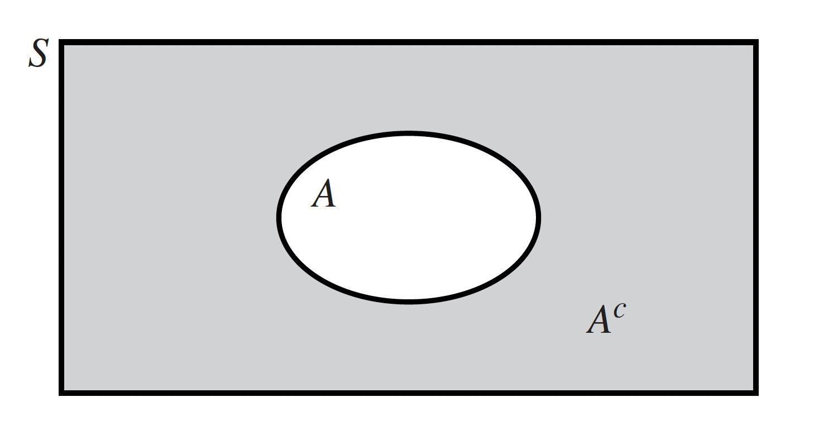
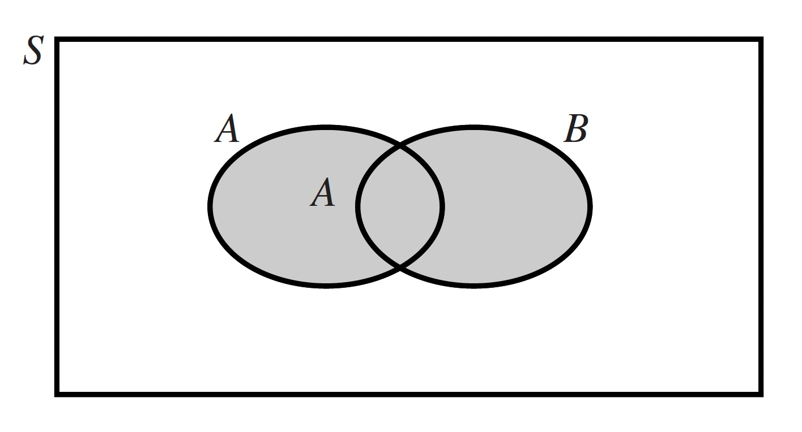
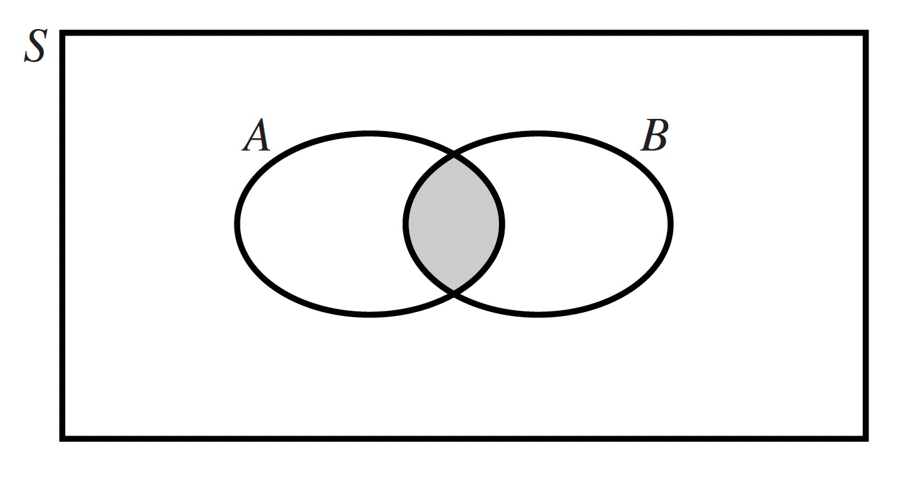
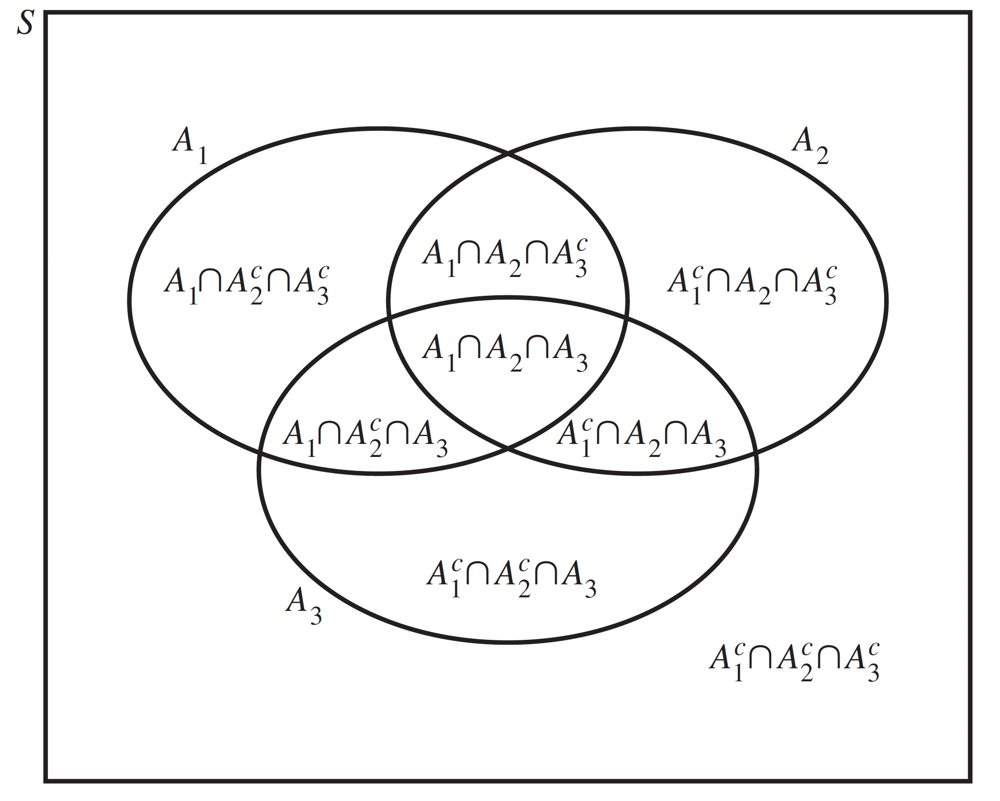
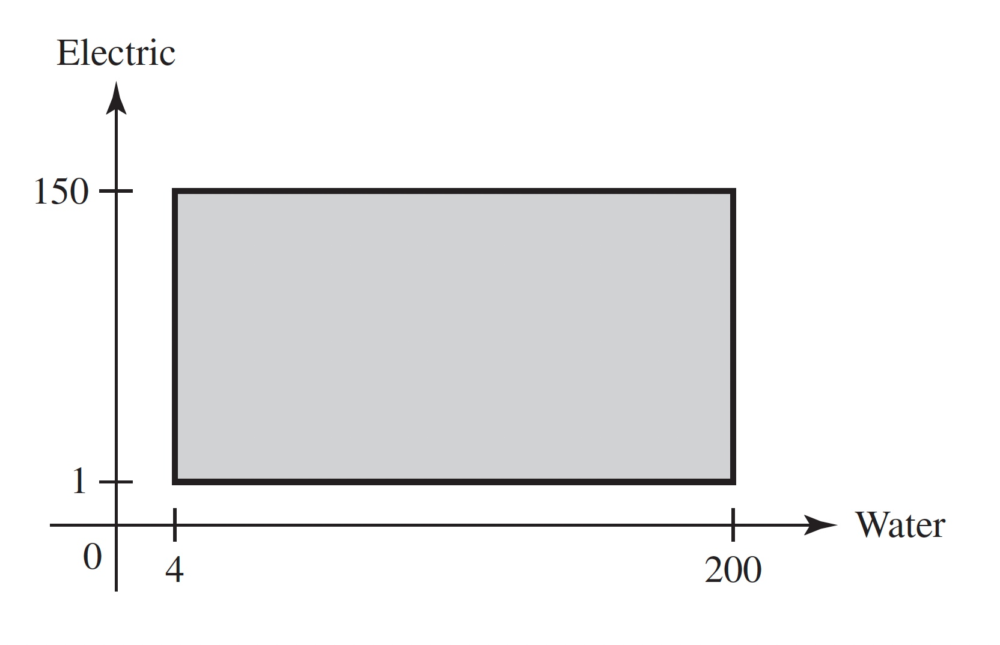
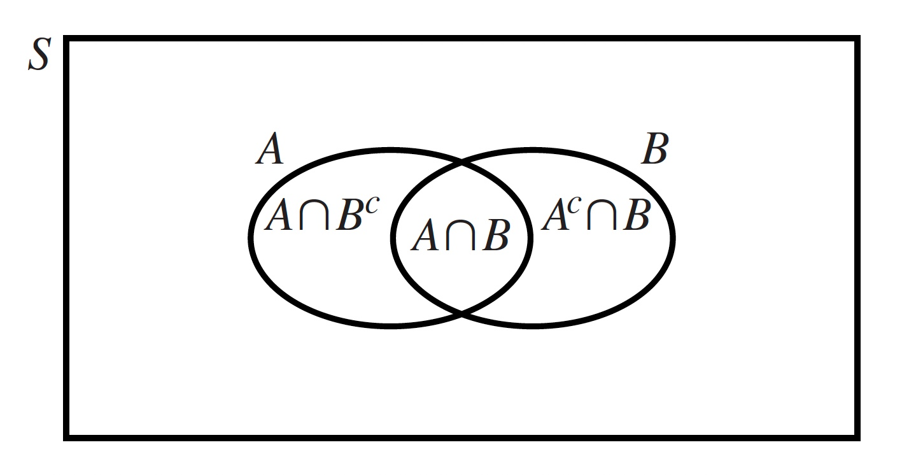
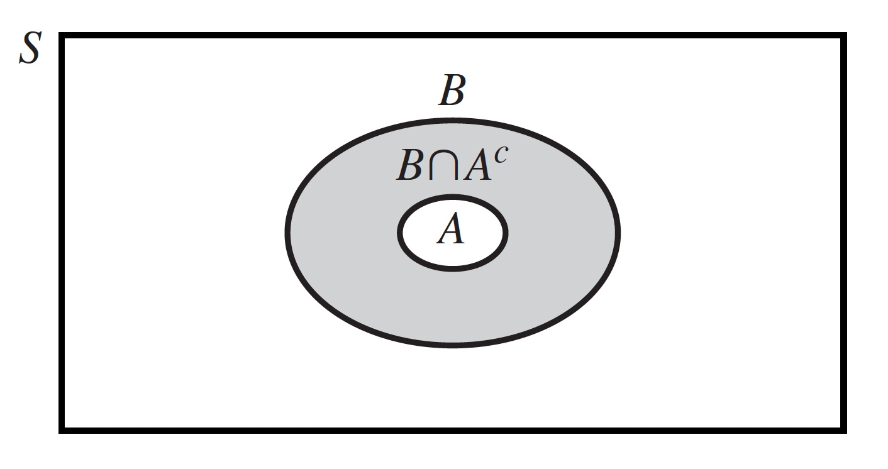
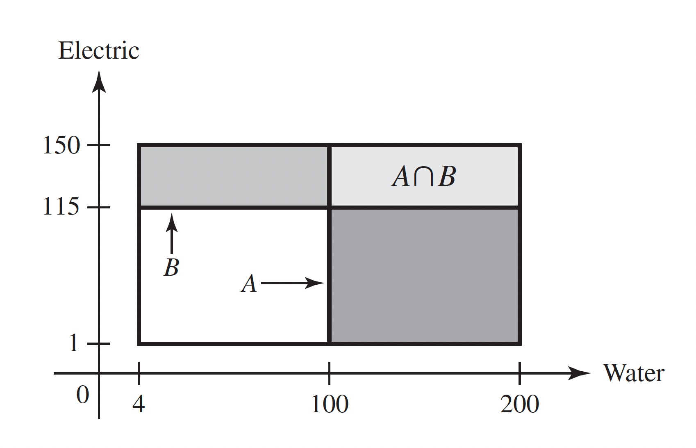

1 Introduction to Probability
1.1 The History of Probability
The use of probability to measure uncertainty and variability dates back hundreds of years. Probability has found application in areas as diverse as medicine, gambling, weather forecasting, and the law.
The concepts of chance and uncertainty are as old as civilization itself. People have always had to cope with uncertainty about the weather, their food supply, and other aspects of their environment, and have striven to reduce this uncertainty and its effects. Even the idea of gambling has a long history. By about the year 3500 BC, games of chance played with bone objects that could be considered precursors of dice were apparently highly developed in Egypt and elsewhere. Cubical dice with markings virtually identical to those on modern dice have been found in Egyptian tombs dating from 2000 BC. We know that gambling with dice has been popular ever since that time and played an important part in the early development of probability theory.
It is generally believed that the mathematical theory of probability was started by the French mathematicians Blaise Pascal (1623–1662) and Pierre Fermat (1601–1665) when they succeeded in deriving exact probabilities for certain gambling problems involving dice. Some of the problems that they solved had been outstanding for about 300 years. However, numerical probabilities of various dice combinations had been calculated previously by Girolamo Cardano (1501–1576) and Galileo Galilei (1564-1642).
The theory of probability has been developed steadily since the seventeenth century and has been widely applied in diverse fields of study. Today, probability theory is an important tool in most areas of engineering, science, and management. Many research workers are actively engaged in the discovery and establishment of new applications of probability in fields such as medicine, meteorology, photography from satellites, marketing, earthquake prediction, human behavior, the design of computer systems, finance, genetics, and law. In many legal proceedings involving antitrust violations or employment discrimination, both sides will present probability and statistical calculations to help support their cases.
References
The ancient history of gambling and the origins of the mathematical theory of probability are discussed by David (1988), Ore (1960), Stigler (1986), and Todhunter (1865).
Some introductory books on probability theory, which discuss many of the same topics that will be studied in this book, are Feller (1968); Hoel, Port, and Stone (1971); Meyer (1970); and Olkin, Gleser, and Derman (1980). Other introductory books, which discuss both probability theory and statistics at about the same level as they will be discussed in this book, are Brunk (1975); Devore (1999); Fraser (1976); Hogg and Tanis (1997); Kempthorne and Folks (1971); Larsen and Marx (2001); Larson (1974); Lindgren (1976); Miller and Miller (1999); Mood, Graybill, and Boes (1974); Rice (1995); and Wackerly, Mendenhall, and Scheaffer (1996).
1.2 Interpretations of Probability
This section describes three common operational interpretations of probability. Although the interpretations may seem incompatible, it is fortunate that the calculus of probability (the subject matter of the first six chapters of this book) applies equally well no matter which interpretation one prefers.
In addition to the many formal applications of probability theory, the concept of probability enters our everyday life and conversation. We often hear and use such expressions as “It probably will rain tomorrow afternoon,” “It is very likely that the plane will arrive late,” or “The chances are good that he will be able to join us for dinner this evening.” Each of these expressions is based on the concept of the probability, or the likelihood, that some specific event will occur.
Despite the fact that the concept of probability is such a common and natural part of our experience, no single scientific interpretation of the term probability is accepted by all statisticians, philosophers, and other authorities. Through the years, each interpretation of probability that has been proposed by some authorities has been criticized by others. Indeed, the true meaning of probability is still a highly controversial subject and is involved in many current philosophical discussions pertaining to the foundations of statistics. Three different interpretations of probability will be described here. Each of these interpretations can be very useful in applying probability theory to practical problems.
The Frequency Interpretation of Probability
In many problems, the probability that some specific outcome of a process will be obtained can be interpreted to mean the relative frequency with which that outcome would be obtained if the process were repeated a large number of times under similar conditions. For example, the probability of obtaining a head when a coin is tossed is considered to be 1/2 because the relative frequency of heads should be approximately 1/2 when the coin is tossed a large number of times under similar conditions. In other words, it is assumed that the proportion of tosses on which a head is obtained would be approximately 1/2.
Of course, the conditions mentioned in this example are too vague to serve as the basis for a scientific definition of probability. First, a “large number” of tosses of the coin is specified, but there is no definite indication of an actual number that would be considered large enough. Second, it is stated that the coin should be tossed each time “under similar conditions,” but these conditions are not described precisely. The conditions under which the coin is tossed must not be completely identical for each toss because the outcomes would then be the same, and there would be either all heads or all tails. In fact, a skilled person can toss a coin into the air repeatedly and catch it in such a way that a head is obtained on almost every toss. Hence, the tosses must not be completely controlled but must have some “random” features.
Furthermore, it is stated that the relative frequency of heads should be “approximately 1/2,” but no limit is specified for the permissible variation from 1/2. If a coin were tossed 1,000,000 times, we would not expect to obtain exactly 500,000 heads. Indeed, we would be extremely surprised if we obtained exactly 500,000 heads. On the other hand, neither would we expect the number of heads to be very far from 500,000. It would be desirable to be able to make a precise statement of the likelihoods of the different possible numbers of heads, but these likelihoods would of necessity depend on the very concept of probability that we are trying to define.
Another shortcoming of the frequency interpretation of probability is that it applies only to a problem in which there can be, at least in principle, a large number of similar repetitions of a certain process. Many important problems are not of this type. For example, the frequency interpretation of probability cannot be applied directly to the probability that a specific acquaintance will get married within the next two years or to the probability that a particular medical research project will lead to the development of a new treatment for a certain disease within a specified period of time.
The Classical Interpretation of Probability
The classical interpretation of probability is based on the concept of equally likely outcomes. For example, when a coin is tossed, there are two possible outcomes: a head or a tail. If it may be assumed that these outcomes are equally likely to occur, then they must have the same probability. Since the sum of the probabilities must be 1, both the probability of a head and the probability of a tail must be 1/2. More generally, if the outcome of some process must be one of n different outcomes, and if these n outcomes are equally likely to occur, then the probability of each outcome is \(1/n\).
Two basic difficulties arise when an attempt is made to develop a formal definition of probability from the classical interpretation. First, the concept of equally likely outcomes is essentially based on the concept of probability that we are trying to define. The statement that two possible outcomes are equally likely to occur is the same as the statement that two outcomes have the same probability. Second, no systematic method is given for assigning probabilities to outcomes that are not assumed to be equally likely.When a coin is tossed, or a well-balanced die is rolled, or a card is chosen from a well-shuffled deck of cards, the different possible outcomes can usually be regarded as equally likely because of the nature of the process. However, when the problem is to guess whether an acquaintance will get married or whether a research project will be successful, the possible outcomes would not typically be considered to be equally likely, and a different method is needed for assigning probabilities to these outcomes.
The Subjective Interpretation of Probability
According to the subjective, or personal, interpretation of probability, the probability that a person assigns to a possible outcome of some process represents her own judgment of the likelihood that the outcome will be obtained. This judgment will be based on each person’s beliefs and information about the process. Another person, who may have different beliefs or different information, may assign a different probability to the same outcome. For this reason, it is appropriate to speak of a certain person’s subjective probability of an outcome, rather than to speak of the true probability of that outcome.
As an illustration of this interpretation, suppose that a coin is to be tossed once. A person with no special information about the coin or the way in which it is tossed might regard a head and a tail to be equally likely outcomes. That person would then assign a subjective probability of 1/2 to the possibility of obtaining a head. The person who is actually tossing the coin, however, might feel that a head is much more likely to be obtained than a tail. In order that people in general may be able to assign subjective probabilities to the outcomes, they must express the strength of their belief in numerical terms. Suppose, for example, that they regard the likelihood of obtaining a head to be the same as the likelihood of obtaining a red card when one card is chosen from a well-shuffled deck containing four red cards and one black card. Because those people would assign a probability of 4/5 to the possibility of obtaining a red card, they should also assign a probability of 4/5 to the possibility of obtaining a head when the coin is tossed.
This subjective interpretation of probability can be formalized. In general, if people’s judgments of the relative likelihoods of various combinations of outcomes satisfy certain conditions of consistency, then it can be shown that their subjective probabilities of the different possible events can be uniquely determined. However, there are two difficulties with the subjective interpretation. First, the requirement that a person’s judgments of the relative likelihoods of an infinite number of events be completely consistent and free from contradictions does not seem to be humanly attainable, unless a person is simply willing to adopt a collection of judgments known to be consistent. Second, the subjective interpretation provides no “objective” basis for two or more scientists working together to reach a common evaluation of the state of knowledge in some scientific area of common interest.
On the other hand, recognition of the subjective interpretation of probability has the salutary effect of emphasizing some of the subjective aspects of science. A particular scientist’s evaluation of the probability of some uncertain outcome must ultimately be that person’s own evaluation based on all the evidence available. This evaluation may well be based in part on the frequency interpretation of probability, since the scientist may take into account the relative frequency of occurrence of this outcome or similar outcomes in the past. It may also be based in part on the classical interpretation of probability, since the scientist may take into account the total number of possible outcomes that are considered equally likely to occur. Nevertheless, the final assignment of numerical probabilities is the responsibility of the scientist herself.
The subjective nature of science is also revealed in the actual problem that a particular scientist chooses to study from the class of problems that might have been chosen, in the experiments that are selected in carrying out this study, and in the conclusions drawn from the experimental data. The mathematical theory of probability and statistics can play an important part in these choices, decisions, and conclusions.
Note: The Theory of Probability Does Not Depend on Interpretation. The mathematical theory of probability is developed and presented in Chapters 1–6 of this book without regard to the controversy surrounding the different interpretations of the term probability. This theory is correct and can be usefully applied, regardless of which interpretation of probability is used in a particular problem. The theories and techniques that will be presented in this book have served as valuable guides and tools in almost all aspects of the design and analysis of effective experimentation.
1.3 Experiments and Events
Probability will be the way that we quantify how likely something is to occur (in the sense of one of the interpretations in Section 1.2). In this section, we give examples of the types of situations in which probability will be used.
Types of Experiments
The theory of probability pertains to the various possible outcomes that might be obtained and the possible events that might occur when an experiment is performed.
The breadth of this definition allows us to call almost any imaginable process an experiment whether or not its outcome will ever be known. The probability of each event will be our way of saying how likely it is that the outcome of the experiment is in the event. Not every set of possible outcomes will be called an event.We shall be more specific about which subsets count as events in Section 1.4.
Probability will be most useful when applied to a real experiment in which the outcome is not known in advance, but there are many hypothetical experiments that provide useful tools for modeling real experiments. A common type of hypothetical experiment is repeating a well-defined task infinitely often under similar conditions. Some examples of experiments and specific events are given next. In each example, the words following “the probability that” describe the event of interest.
- In an experiment in which a coin is to be tossed 10 times, the experimenter might want to determine the probability that at least four heads will be obtained.
- In an experiment in which a sample of 1000 transistors is to be selected from a large shipment of similar items and each selected item is to be inspected, a person might want to determine the probability that not more than one of the selected transistors will be defective.
- In an experiment in which the air temperature at a certain location is to be observed every day at noon for 90 successive days, a person might want to determine the probability that the average temperature during this period will be less than some specified value.
- From information relating to the life of Thomas Jefferson, a person might want to determine the probability that Jefferson was born in the year 1741.
- In evaluating an industrial research and development project at a certain time, a person might want to determine the probability that the project will result in the successful development of a new product within a specified number of months.
The Mathematical Theory of Probability
As was explained in Section 1.2, there is controversy in regard to the proper meaning and interpretation of some of the probabilities that are assigned to the outcomes of many experiments. However, once probabilities have been assigned to some simple outcomes in an experiment, there is complete agreement among all authorities that the mathematical theory of probability provides the appropriate methodology for the further study of these probabilities. Almost all work in the mathematical theory of probability, from the most elementary textbooks to the most advanced research, has been related to the following two problems: (i) methods for determining the probabilities of certain events from the specified probabilities of each possible outcome of an experiment and (ii) methods for revising the probabilities of events when additional relevant information is obtained.
These methods are based on standard mathematical techniques. The purpose of the first six chapters of this book is to present these techniques, which, together, form the mathematical theory of probability.
1.4 Set Theory
This section develops the formal mathematical model for events, namely, the theory of sets. Several important concepts are introduced, namely, element, subset, empty set, intersection, union, complement, and disjoint sets.
The Sample Space
The sample space of an experiment can be thought of as a set, or collection, of different possible outcomes; and each outcome can be thought of as a point, or an element, in the sample space. Similarly, events can be thought of as subsets of the sample space.
Because we can interpret outcomes as elements of a set and events as subsets of a set, the language and concepts of set theory provide a natural context for the development of probability theory. The basic ideas and notation of set theory will now be reviewed.
Relations of Set Theory
Let \(S\) denote the sample space of some experiment. Then each possible outcome \(s\) of the experiment is said to be a member of the space \(S\), or to belong to the space \(S\). The statement that s is a member of \(S\) is denoted symbolically by the relation \(s \in S\).
When an experiment has been performed and we say that some event \(E\) has occurred, we mean two equivalent things. One is that the outcome of the experiment satisfied the conditions that specified that event \(E\). The other is that the outcome, considered as a point in the sample space, is an element of \(E\).
To be precise, we should say which sets of outcomes correspond to events as defined above. In many applications, such as Example 1.1, it will be clear which sets of outcomes should correspond to events. In other applications (such as Example 1.5 coming up later), there are too many sets available to have them all be events. Ideally, we would like to have the largest possible collection of sets called events so that we have the broadest possible applicability of our probability calculations. However, when the sample space is too large (as in Example 1.5) the theory of probability simply will not extend to the collection of all subsets of the sample space.We would prefer not to dwell on this point for two reasons. First, a careful handling requires mathematical details that interfere with an initial understanding of the important concepts, and second, the practical implications for the results in this text are minimal. In order to be mathematically correct without imposing an undue burden on the reader, we note the following. In order to be able to do all of the probability calculations that we might find interesting, there are three simple conditions that must be met by the collection of sets that we call events. In every problem that we see in this text, there exists a collection of sets that includes all the sets that we will need to discuss and that satisfies the three conditions, and the reader should assume that such a collection has been chosen as the events. For a sample space \(S\) with only finitely many outcomes, the collection of all subsets of S satisfies the conditions, as the reader can show in Exercise 3.12 in this section.
The first of the three conditions can be stated immediately.
That is, we must include the sample space \(S\) in our collection of events. The other two conditions will appear later in this section because they require additional definitions.
For events, to say that \(A \subset B\) means that if \(A\) occurs then so does \(B\).
The proof of the following result is straightforward and is omitted.
The Empty Set: Some events are impossible. For example, when a die is rolled, it is impossible to obtain a negative number. Hence, the event that a negative number will be obtained is defined by the subset of \(S\) that contains no outcomes.
In terms of events, the empty set is any event that cannot occur.
Finite and Infinite Sets: Some sets contain only finitely many elements, while others have infinitely many elements. There are two sizes of infinite sets that we need to distinguish.
Examples of countably infinite sets include the integers, the even integers, the odd integers, the prime numbers, and any infinite sequence. Each of these can be put in one-to-one correspondence with the natural numbers. For example, the following function \(f\) puts the integers in one-to-one correspondence with the natural numbers:
\[ f(n) = \begin{cases} \frac{n-1}{2} &\text{if }n\text{ is odd,} \\ -\frac{n}{2} &\text{if }n\text{ is even.} \end{cases} \]
Every infinite sequence of distinct items is a countable set, as its indexing puts it in one-to-one correspondence with the natural numbers. Examples of uncountable sets include the real numbers, the positive reals, the numbers in the interval \([0, 1]\), and the set of all ordered pairs of real numbers. An argument to show that the real numbers are uncountable appears at the end of this section. Every subset of the integers has at most countably many elements.
Operations of Set Theory
In terms of events, the event \(A^c\) is the event that \(A\) does not occur.
We can now state the second condition that we require of the collection of events.


That is, for each set \(A\) of outcomes that we call an event, we must also call its complement \(A^c\) an event.
A generic version of the relationship between \(A\) and \(A^c\) is sketched in Figure 1.1.
A sketch of this type is called a Venn diagram.
Some properties of the complement are stated without proof in the next result.
The set \(A \cup B\) is sketched in Figure 1.2. In terms of events, \(A \cup B\) is the event that either \(A\) or \(B\) or both occur.
The union has the following properties whose proofs are left to the reader.
The concept of union extends to more than two sets.
Similarly, the union of an infinite sequence of sets \(A_1, A_2, \ldots\) is the set that contains all outcomes that belong to at least one of the events in the sequence. The infinite union is denoted by \(\bigcup_{i=1}^{\infty}A_i\).
In terms of events, the union of a collection of events is the event that at least one of the events in the collection occurs.
We can now state the final condition that we require for the collection of sets that we call events.
In other words, if we choose to call each set of outcomes in some countable collection an event, we are required to call their union an event also. We do not require that the union of an arbitrary collection of events be an event. To be clear, let \(I\) be an arbitrary set that we use to index a general collection of events \(\{A_i : i \in I \}\). The union of the events in this collection is the set of outcomes that are in at least one of the events in the collection. The notation for this union is \(\bigcup_{i \in I}A_i\). We do not require that \(\bigcup_{i \in I}A_i\) be an event unless \(I\) is countable.
Condition 3 refers to a countable collection of events. We can prove that the condition also applies to every finite collection of events.
The union of three events \(A\), \(B\), and \(C\) can be constructed either directly from the definition of \(A \cup B \cup C\) or by first evaluating the union of any two of the events and then forming the union of this combination of events and the third event. In other words, the following result is true.
The set \(A \cap B\) is sketched in a Venn diagram in Figure 1.3. In terms of events, \(A \cap B\) is the event that both \(A\) and \(B\) occur.
The proof of the first part of the next result follows from Example 1.3 in this section. The rest of the proof is straightforward.

The concept of intersection extends to more than two sets.
In terms of events, the intersection of a collection of events is the event that every event in the collection occurs.
The following result concerning the intersection of three events is straightforward to prove.
In terms of events, \(A\) and \(B\) are disjoint if they cannot both occur.
As an illustration of these concepts, a Venn diagram for three events \(A_1\), \(A_2\), and \(A_3\) is presented in Figure 1.4. This diagram indicates that the various intersections of \(A_1\), \(A_2\), and \(A_3\) and their complements will partition the sample space \(S\) into eight disjoint subsets.



Additional Properties of Sets: The proof of the following useful result is left to Exercise 1.3 in this section.
The generalization of Theorem 1.9 is the subject of Exercise 1.5 in this section.
The proofs of the following distributive properties are left to Exercise 1.2 in this section. These properties also extend in natural ways to larger collections of events.
The following result is useful for computing probabilities of events that can be partitioned into smaller pieces. Its proof is left to Exercise 1.4 in this section, and is illuminated by Figure 1.6.
Proof That the Real Numbers Are Uncountable
We shall show that the real numbers in the interval \([0, 1)\) are uncountable. Every larger set is a fortiori uncountable. For each number \(x \in [0, 1)\), define the sequence \(\{a_n(x)\}_{n=1}^{\infty}\) as follows. First, \(a_1(x) = \lfloor{}10x \rfloor\), where \(\lfloor y \rfloor\) stands for the greatest integer less than or equal to \(y\) (round non-integers down to the closest integer below). Then set \(b_1(x) = 10x − a_1(x)\), which will again be in \([0, 1)\). For \(n > 1\), \(a_n(x) = \lfloor{}10b_{n−1}(x)\rfloor{}\) and \(b_n(x) = 10b_{n−1}(x) − a_n(x)\). It is easy to see that the sequence \(\{a_n(x)\}_{n=1}^{\infty}\) gives a decimal expansion for \(x\) in the form
\[ x = \sum_{n=1}^{\infty}a_n(x)10^{-n}. \tag{1.1}\]
By construction, each number of the form \(x = k/10^m\) for some nonnegative integers \(k\) and \(m\) will have \(a_n(x) = 0\) for \(n > m\). The numbers of the form \(k/10^m\) are the only ones that have an alternate decimal expansion \(x = \sum_{n=1}^{\infty}c_n(x)10^{-n}\). When \(k\) is not a multiple of 10, this alternate expansion satisfies \(c_n(x) = a_n(x)\) for \(n = 1, \ldots, m-1\), \(c_m(x) = a_m(x) − 1\), and \(c_n(x) = 9\) for \(n > m\). Let \(C = \{0, 1, \ldots, 9\}^{\infty}\) stand for the set of all infinite sequences of digits. Let \(B\) denote the subset of \(C\) consisting of those sequences that don’t end in repeating 9’s. Then we have just constructed a function a from the interval \([0, 1)\) onto \(B\) that is one-to-one and whose inverse is given in Equation 1.1. We now show that the set \(B\) is uncountable, hence \([0, 1)\) is uncountable. Take any countable subset of \(B\) and arrange the sequences into a rectangular array with the \(k\)th sequence running across the \(k\)th row of the array for \(k = 1, 2, \ldots\). Figure 1.7 gives an example of part of such an array.
In Figure 1.7, we have underlined the \(k\)th digit in the \(k\)th sequence for each \(k\). This portion of the array is called the diagonal of the array. We now show that there must exist a sequence in \(B\) that is not part of this array. This will prove that the whole set \(B\) cannot be put into such an array, and hence cannot be countable. Construct the sequence \(\{d_n\}_{n=1}^{\infty}\) as follows. For each \(n\), let \(d_n = 2\) if the \(n\)th digit in the \(n\)th sequence is 1, and \(d_n = 1\) otherwise. This sequence does not end in repeating 9’s; hence, it is in \(B\). We conclude the proof by showing that \(\{d_n\}_{n=1}^{\infty}\) does not appear anywhere in the array. If the sequence did appear in the array, say, in the \(k\)th row, then its \(k\)th element would be the \(k\)th diagonal element of the array. But we constructed the sequence so that for every \(n\) (including \(n = k\)), its \(n\)th element never matched the \(n\)th diagonal element. Hence, the sequence can’t be in the \(k\)th row, no matter what \(k\) is. The argument given here is essentially that of the nineteenth-century German mathematician Georg Cantor.
\[ \begin{matrix} \underline{0} & 2 & 3 & 0 & 7 & 1 & 3 & \cdots \\ 1 & \underline{9} & 9 & 2 & 1 & 0 & 0 & \cdots \\ 2 & 7 & \underline{3} & 6 & 0 & 1 & 1 & \cdots \\ 8 & 0 & 2 & \underline{1} & 2 & 7 & 9 & \cdots \\ 7 & 0 & 1 & 6 & \underline{0} & 1 & 3 & \cdots \\ 1 & 5 & 1 & 5 & 1 & \underline{5} & 1 & \cdots \\ 2 & 3 & 4 & 5 & 6 & 7 & \underline{8} & \cdots \\ % 0 & 1 & 7 & 3 & 2 & 9 & 8 & \cdots \\ \vdots & \vdots & \vdots & \vdots & \vdots & \vdots & \vdots & \ddots \\ \end{matrix} \]
Summary
We will use set theory for the mathematical model of events. Outcomes of an experiment are elements of some sample space \(S\), and each event is a subset of \(S\). Two events both occur if the outcome is in the intersection of the two sets. At least one of a collection of events occurs if the outcome is in the union of the sets. Two events cannot both occur if the sets are disjoint. An event fails to occur if the outcome is in the complement of the set. The empty set stands for every event that cannot possibly occur. The collection of events is assumed to contain the sample space, the complement of each event, and the union of each countable collection of events.
Exercises
Exercise 1.1 (Exercise 1.4.1) Suppose that \(A \subset B\). Show that \(B^c \subset A^c\).
Exercise 1.2 (Exercise 1.4.2) Prove the distributive properties in Theorem 1.10.
Exercise 1.3 (Exercise 1.4.3) Prove De Morgan’s laws (Theorem 1.9).
Exercise 1.4 (Exercise 1.4.4) Prove Theorem 1.11.
Exercise 1.5 (Exercise 1.4.5) For every collection of events \(A_i (i \in I)\), show that \[ \left(\bigcup_{i \in I}A_i\right)^c = \bigcap_{i \in I}A_i^c \text{ and }\left(\bigcap_{i \in I}A_i\right)^c = \bigcup_{i \in I}A_i^c. \]
Exercise 1.6 (Exercise 1.4.6) Suppose that one card is to be selected from a deck of 20 cards that contains 10 red cards numbered from 1 to 10 and 10 blue cards numbered from 1 to 10. Let \(A\) be the event that a card with an even number is selected, let \(B\) be the event that a blue card is selected, and let \(C\) be the event that a card with a number less than 5 is selected. Describe the sample space \(S\) and describe each of the following events both in words and as subsets of \(S\):
- \(A \cap B \cap C\)
- \(B \cap C^c\)
- \(A \cup B \cup C\)
- \(A \cap (B \cup C)\)
- \(A^c \cap B^c \cap C^c\).
Exercise 1.7 (Exercise 1.4.7) Suppose that a number \(x\) is to be selected from the real line \(S\), and let \(A\), \(B\), and \(C\) be the events represented by the following subsets of \(S\), where the notation \(\{x : p(x)\}\) denotes the set containing every point \(x\) for which the property \(p\) following the colon is satisfied:
\[ \begin{align*} A &= \{x : 1 \leq x \leq 5\}, \\ B &= \{x : 3 < x \leq 7\}, \\ C &= \{x : x \leq 0\}. \end{align*} \]
Describe each of the following events as a set of real numbers:
- \(A^c\)
- \(A \cup B\)
- \(B \cap C^c\)
- \(A^c \cap B^c \cap C^c\)
- \((A \cup B) \cap C\).
Exercise 1.8 (Exercise 1.4.8) A simplified model of the human blood-type system has four blood types: A, B, AB, and O. There are two antigens, anti-A and anti-B, that react with a person’s blood in different ways depending on the blood type. Anti-A reacts with blood types A and AB, but not with B and O. Anti-B reacts with blood types B and AB, but not with A and O. Suppose that a person’s blood is sampled and tested with the two antigens. Let \(A\) be the event that the blood reacts with anti-A, and let \(B\) be the event that it reacts with anti-B. Classify the person’s blood type using the events \(A\), \(B\), and their complements.
Exercise 1.9 (Exercise 1.4.9) Let \(S\) be a given sample space and let \(A_1, A_2, \ldots\) be an infinite sequence of events. For \(n = 1, 2, \ldots\), let \(B_n = \bigcup_{i=n}^{\infty}A_i\) and let \(C_n = \bigcap_{i=n}^{\infty}A_i\).
- Show that \(B_1 \supset B_2 \supset \cdots\) and that \(C_1 \subset C_2 \subset \cdots\).
- Show that an outcome in \(S\) belongs to the event \(\bigcap_{n=1}^{\infty}B_n\) if and only if it belongs to an infinite number of the events \(A_1, A_2, \ldots\).
- Show that an outcome in \(S\) belongs to the event \(\bigcup_{n=1}^{\infty}\) if and only if it belongs to all the events \(A_1, A_2, \ldots\) except possibly a finite number of those events.
Exercise 1.10 (Exercise 1.4.10) Three six-sided dice are rolled. The six sides of each die are numbered 1–6. Let \(A\) be the event that the first die shows an even number, let \(B\) be the event that the second die shows an even number, and let \(C\) be the event that the third die shows an even number. Also, for each \(i = 1, \ldots, 6\), let \(A_i\) be the event that the first die shows the number \(i\), let \(B_i\) be the event that the second die shows the number \(i\), and let \(C_i\) be the event that the third die shows the number \(i\). Express each of the following events in terms of the named events described above:
- The event that all three dice show even numbers
- The event that no die shows an even number
- The event that at least one die shows an odd number
- The event that at most two dice show odd numbers
- The event that the sum of the three dice is no greater than 5
Exercise 1.11 (Exercise 1.4.11) A power cell consists of two subcells, each of which can provide from 0 to 5 volts, regardless of what the other subcell provides. The power cell is functional if and only if the sum of the two voltages of the subcells is at least 6 volts. An experiment consists of measuring and recording the voltages of the two subcells. Let \(A\) be the event that the power cell is functional, let \(B\) be the event that two subcells have the same voltage, let \(C\) be the event that the first subcell has a strictly higher voltage than the second subcell, and let \(D\) be the event that the power cell is not functional but needs less than one additional volt to become functional.
- Define a sample space \(S\) for the experiment as a set of ordered pairs that makes it possible for you to express the four sets above as events.
- Express each of the events \(A\), \(B\), \(C\), and \(D\) as sets of ordered pairs that are subsets of \(S\).
- Express the following set in terms of \(A\), \(B\), \(C\), and/or \(D\): \(\{(x, y) : x = y\text{ and }x + y \leq 5\}\).
- Express the following event in terms of \(A\), \(B\), \(C\), and/or \(D\): the event that the power cell is not functional and the second subcell has a strictly higher voltage than the first subcell.
Exercise 1.12 (Exercise 1.4.12) Suppose that the sample space \(S\) of some experiment is finite. Show that the collection of all subsets of \(S\) satisfies the three conditions required to be called the collection of events.
Exercise 1.13 (Exercise 1.4.13) Let \(S\) be the sample space for some experiment. Show that the collection of subsets consisting solely of \(S\) and \(\varnothing\) satisfies the three conditions required in order to be called the collection of events. Explain why this collection would not be very interesting in most real problems.
Exercise 1.14 (Exercise 1.4.14) Suppose that the sample space \(S\) of some experiment is countable. Suppose also that, for every outcome \(s \in S\), the subset \(\{s\}\) is an event. Show that every subset of \(S\) must be an event. Hint: Recall the three conditions required of the collection of subsets of \(S\) that we call events.
1.5 The Definition of Probability
We begin with the mathematical definition of probability and then present some useful results that follow easily from the definition.
Axioms and Basic Theorems
In this section, we shall present the mathematical, or axiomatic, definition of probability. In a given experiment, it is necessary to assign to each event \(A\) in the sample space \(S\) a number \(\Pr(A)\) that indicates the probability that \(A\) will occur. In order to satisfy the mathematical definition of probability, the number \(\Pr(A)\) that is assigned must satisfy three specific axioms. These axioms ensure that the number \(\Pr(A)\) will have certain properties that we intuitively expect a probability to have under each of the various interpretations described in Section 1.2.
The first axiom states that the probability of every event must be nonnegative.
Proposition 1.1 (Axiom 1) For every event \(A\), \(\Pr(A) \geq 0\).
The second axiom states that if an event is certain to occur, then the probability of that event is 1.
Proposition 1.2 (Axiom 2) \[ \Pr(S) = 1. \]
Before stating Axiom 3, we shall discuss the probabilities of disjoint events. If two events are disjoint, it is natural to assume that the probability that one or the other will occur is the sum of their individual probabilities. In fact, it will be assumed that this additive property of probability is also true for every finite collection of disjoint events and even for every infinite sequence of disjoint events. If we assume that this additive property is true only for a finite number of disjoint events, we cannot then be certain that the property will be true for an infinite sequence of disjoint events as well. However, if we assume that the additive property is true for every infinite sequence of disjoint events, then (as we shall prove) the property must also be true for every finite number of disjoint events. These considerations lead to the third axiom.
Proposition 1.3 (Axiom 3) For every infinite sequence of disjoint events \(A_1, A_2, \ldots\),
\[ \Pr\left(\bigcup_{i=1}^{\infty}\right) = \sum_{i=1}^{\infty}\Pr(A_i). \]
We are now prepared to give the mathematical definition of probability.
We shall now derive two important consequences of Proposition 1.3. First, we shall show that if an event is impossible, its probability must be 0.
We can now show that the additive property assumed in Proposition 1.3 for an infinite sequence of disjoint events is also true for every finite number of disjoint events.
Further Properties of Probability
From the axioms and theorems just given, we shall now derive four other general properties of probability measures. Because of the fundamental nature of these four properties, they will be presented in the form of four theorems, each one of which is easily proved.


The proof of the following useful result is left to Exercise 1.27.
Note: Probability Zero Does Not Mean Impossible. When an event has probability 0, it does not mean that the event is impossible. In Example 1.9, there are many events with 0 probability, but they are not all impossible. For example, for every \(x\), the event that water demand equals \(x\) corresponds to a line segment in Figure 1.5. Since line segments have 0 area, the probability of every such line segment is 0, but the events are not all impossible. Indeed, if every event of the form \(\{\text{water demand equals }x\}\) were impossible, then water demand could not take any value at all. If \(\epsilon > 0\), the event
\[ \{\text{water demand is between }x − \epsilon\text{ and }x + \epsilon\} \]
will have positive probability, but that probability will go to 0 as \(\epsilon\) goes to 0.
Summary
We have presented the mathematical definition of probability through the three axioms. The axioms require that every event have nonnegative probability, that the whole sample space have probability 1, and that the union of an infinite sequence of disjoint events have probability equal to the sum of their probabilities. Some important results to remember include the following:
- If \(A_1, \ldots, A_k\) are disjoint, \(\Pr\left(\bigcup_{i=1}^kA_i\right) = \sum_{i=1}^k\Pr(A_i)\).
- \(\Pr(A^c) = 1 - \Pr(A)\).
- \(A \subset B\) implies that \(\Pr(A) \leq \Pr(B)\).
- \(\Pr(A \cup B) = \Pr(A) + \Pr(B) − \Pr(A \cap B)\).
It does not matter how the probabilities were determined. As long as they satisfy the three axioms, they must also satisfy the above relations as well as all of the results that we prove later in the text.
Exercises
Exercise 1.15 (Exercise 1.5.1)
- One ball is to be selected from a box containing red, white, blue, yellow, and green balls. If the probability that the selected ball will be red is 1/5 and the probability that it will be white is 2/5, what is the probability that it will be blue, yellow, or green?
Exercise 1.16 (Exercise 1.5.2)
- A student selected from a class will be either a boy or a girl. If the probability that a boy will be selected is 0.3, what is the probability that a girl will be selected?
Exercise 1.17 (Exercise 1.5.3)
- Consider two events A and B such that Pr(A) = 1/3 and Pr(B) = 1/2. Determine the value of Pr(B ∩ Ac) for each of the following conditions: (a) A and B are disjoint;
- A ⊂ B; (c) Pr(A ∩ B) = 1/8.
Exercise 1.18 (Exercise 1.5.4)
- If the probability that studentAwill fail a certain statistics examination is 0.5, the probability that student B will fail the examination is 0.2, and the probability that both student A and student B will fail the examination is 0.1, what is the probability that at least one of these two students will fail the examination?
Exercise 1.19 (Exercise 1.5.5)
- For the conditions of Exercise 1.18, what is the probability that neither student \(A\) nor student \(B\) will fail the examination?
Exercise 1.20 (Exercise 1.5.6)
- For the conditions of Exercise 1.18, what is the probability that exactly one of the two students will fail the examination?
Exercise 1.21 (Exercise 1.5.7)
- Consider two events A and B with Pr(A) = 0.4 and Pr(B) = 0.7. Determine the maximum and minimum possible values of Pr(A ∩ B) and the conditions under which each of these values is attained.
Exercise 1.22 (Exercise 1.5.8)
- If 50 percent of the families in a certain city subscribe to the morning newspaper, 65 percent of the families subscribe to the afternoon newspaper, and 85 percent of the families subscribe to at least one of the two newspapers, what percentage of the families subscribe to both newspapers?
Exercise 1.23 (Exercise 1.5.9)
- Prove that for every two eventsAandB, the probability that exactly one of the two events will occur is given by the expression Pr(A) + Pr(B) − 2 Pr(A ∩ B).
Exercise 1.24 (Exercise 1.5.10)
- For two arbitrary events A and B, prove that Pr(A) = Pr(A ∩ B) + Pr(A ∩ Bc).
Exercise 1.25 (Exercise 1.5.11)
- A point (x, y) is to be selected from the square S containing all points (x, y) such that 0 ≤ x ≤ 1 and \(0 \leq y \leq 1\). Suppose that the probability that the selected point will belong to each specified subset of S is equal to the area of that subset. Find the probability of each of the following subsets: (a) the subset of points such that (x − 1 2 )2 + (y − 1 2 )2 ≥ 1 4 ; (b) the subset of points such that 1 2 < x +y < 3 2 ;
- the subset of points such that y ≤ 1− x2; (d) the subset of points such that x = y.
Exercise 1.26 (Exercise 1.5.12)
- Let A1, A2, . . . be an arbitrary infinite sequence of events, and let B1, B2, . . . be another infinite sequence of events defined as follows: B1 = A1, B2 = Ac 1 ∩ A2, B3 = Ac 1 ∩ Ac 2 ∩ A3, B4 = Ac 1 ∩ Ac 2 ∩ Ac 3 ∩ A4, . . . . Prove that Pr n i=1 Ai = n i=1 Pr(Bi) for n = 1, 2, . . . , and that Pr ∞ i=1 Ai = ∞ i=1 Pr(Bi).
Exercise 1.27 (Exercise 1.5.13)
- Prove Theorem 1.19. Hint: Use Exercise 1.26.
Exercise 1.28 (Exercise 1.5.14)
- Consider, once again, the four blood types A, B, AB, and O described in Exercise 8 in Sec. 1.4 together with the two antigens anti-A and anti-B. Suppose that, for a given person, the probability of type O blood is 0.5, the probability of type A blood is 0.34, and the probability of type B blood is 0.12.
- Find the probability that each of the antigens will react with this person’s blood.
- Find the probability that both antigens will react with this person’s blood.
1.6 Finite Sample Spaces
The simplest experiments in which to determine and derive probabilities are those that involve only finitely many possible outcomes. This section gives several examples to illustrate the important concepts from Section 1.5 in finite sample spaces.
Requirements of Probabilities
In this section, we shall consider experiments for which there are only a finite number of possible outcomes. In other words, we shall consider experiments for which the sample space \(S\) contains only a finite number of points \(s_1, \ldots, s_n\). In an experiment of this type, a probability measure on \(S\) is specified by assigning a probability \(p_i\) to each point \(s_i \in S\). The number \(p_i\) is the probability that the outcome of the experiment will be \(s_i\) (\(i = 1, \ldots, n\)). In order to satisfy the axioms of probability, the numbers \(p_1, \ldots, p_n\) must satisfy the following two conditions:
\[ p_i \geq 0\text{ for }i = 1, \ldots, n \]
and
\[ \sum_{i=1}^np_i = 1. \]
The probability of each event \(A\) can then be found by adding the probabilities \(p_i\) of all outcomes \(s_i\) that belong to \(A\). This is the general version of Example 1.7.
Simple Sample Spaces
A sample space \(S\) containing \(n\) outcomes \(s_1, \ldots, s_n\) is called a simple sample space if the probability assigned to each of the outcomes \(s_1, \ldots, s_n\) is \(1/n\). If an event \(A\) in this simple sample space contains exactly \(m\) outcomes, then
\[ \Pr(A) = \frac{m}{n}. \]
It should be noted that if we had considered the only possible outcomes to be no heads, one head, two heads, and three heads, it would have been reasonable to assume that the sample space contained just these four outcomes. This sample space would not be simple because the outcomes would not be equally probable.
Summary
A simple sample space is a finite sample space \(S\) such that every outcome in \(S\) has the same probability. If there are \(n\) outcomes in a simple sample space \(S\), then each one must have probability \(1/n\). The probability of an event \(E\) in a simple sample space is the number of outcomes in \(E\) divided by \(n\). In the next three sections, we will present some useful methods for counting numbers of outcomes in various events.
Exercises
Exercise 1.29 (Exercise 1.6.1)
- If two balanced dice are rolled, what is the probability that the sum of the two numbers that appear will be odd?
Exercise 1.30 (Exercise 1.6.2)
- If two balanced dice are rolled, what is the probability that the sum of the two numbers that appear will be even?
Exercise 1.31 (Exercise 1.6.3)
- If two balanced dice are rolled, what is the probability that the difference between the two numbers that appear will be less than 3?
Exercise 1.32 (Exercise 1.6.4)
- A school contains students in grades 1, 2, 3, 4, 5, and 6. Grades 2, 3, 4, 5, and 6 all contain the same number of students, but there are twice this number in grade 1. If a student is selected at random from a list of all the students in the school, what is the probability that she will be in grade 3?
Exercise 1.33 (Exercise 1.6.5)
- For the conditions of Exercise 1.32, what is the probability that the selected student will be in an odd-numbered grade?
Exercise 1.34 (Exercise 1.6.6)
- If three fair coins are tossed, what is the probability that all three faces will be the same?
Exercise 1.35 (Exercise 1.6.7)
- Consider the setup of Example 1.13. This time, assume that two parents have genotypes Aa and aa. Find the possible genotypes for an offspring and find the probabilities for each genotype. Assume that all possible results of the parents contributing pairs of alleles are equally likely.
Exercise 1.36 (Exercise 1.6.8) Consider an experiment in which a fair coin is tossed once and a balanced die is rolled once.
- Describe the sample space for this experiment.
- What is the probability that a head will be obtained on the coin and an odd number will be obtained on the die?
1.7 Counting Methods
In simple sample spaces, one way to calculate the probability of an event involves counting the number of outcomes in the event and the number of outcomes in the sample space. This section presents some common methods for counting the number of outcomes in a set. These methods rely on special structure that exists in many common experiments, namely, that each outcome consists of several parts and that it is relatively easy to count how many possibilities there are for each of the parts.
We have seen that in a simple sample space \(S\), the probability of an event \(A\) is the ratio of the number of outcomes in \(A\) to the total number of outcomes in \(S\). In many experiments, the number of outcomes in \(S\) is so large that a complete listing of these outcomes is too expensive, too slow, or too likely to be incorrect to be useful. In such an experiment, it is convenient to have a method of determining the total number of outcomes in the space \(S\) and in various events in \(S\) without compiling a list of all these outcomes. In this section, some of these methods will be presented.
A C 4 1 2 3 5 6 7 8 B
Multiplication Rule
Example 1.15 is a special case of a common form of experiment.
Since each of the \(m\) rows in the array in Example 1.16 contains \(n\) pairs, the following result follows directly.
Figure 1.11 illustrates the multiplication rule for the case of \(n = 3\) and \(m = 2\) with a tree diagram. Each end-node of the tree represents an outcome, which is the pair consisting of the two parts whose names appear along the branch leading to the end-node.
The multiplication rule can be extended to experiments with more than two parts.
x2 x1 y1 y1 y2 y2 y3 y3 (x1, y1) (x2, y1) (x2, y2) (x2, y3) (x1, y2) (x1, y3)
Note: The Multiplication Rule Is Slightly More General. In the statements of Theorems -Theorem 1.20 and -Theorem 1.21, it is assumed that each possible outcome in each part of the experiment can occur regardless of what occurs in the other parts of the experiment. Technically, all that is necessary is that the number of possible outcomes for each part of the experiment not depend on what occurs on the other parts. The discussion of permutations below is an example of this situation.
Permutations
The situation in Example 1.20 can be generalized to any number of selections without replacement.
By arguing as in Example 1.20, we can figure out how many different permutations there are of \(n\) elements taken \(k\) at a time. The proof of the following theorem is simply to extend the reasoning in Example 1.20 to selecting \(k\) cards without replacement. The proof is left to the reader.
When \(k = n\), the number of possible permutations will be the number \(P_{n,n}\) of different permutations of all \(n\) cards. It is seen from the equation just derived that
\[ P_{n,n} = n(n − 1)\cdots 1 = n! \]
The symbol \(n!\) is read \(n\) factorial. In general, the number of permutations of \(n\) different items is \(n!\).
The expression for \(P_{n, k}\) can be rewritten in the following alternate form for \(k = 1, \ldots, n - 1\):
\[ P_{n, k} = n(n − 1) \cdots (n − k + 1)\frac{(n − k)(n − k − 1) \cdots 1}{(n − k)(n − k − 1) \cdots 1} = \frac{n!}{(n − k)!} \]
Here and elsewhere in the theory of probability, it is convenient to define \(0!\) by the relation
\[ 0!= 1. \]
With this definition, it follows that the relation \(P_{n, k} = n!/(n-k)!\) will be correct for the value \(k = n\) as well as for the values \(k = 1, \ldots, n - 1\). To summarize:
Note: Using Two Different Methods in the Same Problem. Example 1.25 illustrates a combination of techniques that might seem confusing at first. The method used to count the number of outcomes in the sample space was based on sampling with replacement, since the experiment allows repeat numbers in each outcome. The method used to count the number of outcomes in the eventE was permutations (sampling without replacement) because E consists of those outcomes without repeats. It often happens that one needs to use different methods to count the numbers of outcomes in different subsets of the sample space. The birthday problem, which follows, is another example in which we need more than one counting method in the same problem.
The Birthday Problem
In the following problem, which is often called the birthday problem, it is required to determine the probability p that at least two people in a group of k people will have the same birthday, that is, will have been born on the same day of the same month but not necessarily in the same year. For the solution presented here, we assume that the birthdays of the k people are unrelated (in particular, we assume that twins are not present) and that each of the 365 days of the year is equally likely to be the birthday of any person in the group. In particular, we ignore the fact that the birth rate actually varies during the year and we assume that anyone actually born on February 29 will consider his birthday to be another day, such as March 1. When these assumptions are made, this problem becomes similar to the one in Example 1.7.11. Since there are 365 possible birthdays for each of k people, the sample space S will contain 365k outcomes, all of which will be equally probable. If k > 365, there are not enough birthdays for every one to be different, and hence at least two people must have the same birthday. So, we assume that k ≤ 365. Counting the number of outcomes in which at least two birthdays are the same is tedious. However, the number of outcomes in S for which all k birthdays will be different is P365, k, since the first person’s birthday could be any one of the 365 days, the second person’s birthday could then be any of the other 364 days, and so on. Hence, the probability that all k persons will have different birthdays is P365, k 365k . The probability p that at least two of the people will have the same birthday is therefore p = 1− P365, k 365k = 1− (365)! (365 − k)!365k . Numerical values of this probability p for various values of k are given in Table 1.1. These probabilities may seem surprisingly large to anyone who has not thought about them before. Many persons would guess that in order to obtain a value of p greater than 1/2, the number of people in the group would have to be about 100. However, according to Table 1.1, there would have to be only 23 people in the group. As a matter of fact, for k = 100 the value of p is 0.9999997.
| \(k\) | \(p\) | \(k\) | \(p\) |
|---|---|---|---|
| 5 | 0.027 | 25 | 0.569 |
| 10 | 0.117 | 30 | 0.706 |
| 15 | 0.253 | 40 | 0.891 |
| 20 | 0.411 | 50 | 0.970 |
| 22 | 0.476 | 60 | 0.994 |
| 23 | 0.507 |
The calculation in this example illustrates a common technique for solving probability problems. If one wishes to compute the probability of some event A, it might be more straightforward to calculate Pr(Ac) and then use the fact that Pr(A) = 1− Pr(Ac). This idea is particularly useful when the event A is of the form “at least n things happen” where n is small compared to how many things could happen.
Stirling’s Formula
For large values of \(n\), it is nearly impossible to compute \(n!\). For \(n \geq 70\), \(n! > 10^{100}\) and cannot be represented on many scientific calculators. In most cases for which \(n!\) is needed with a large value of \(n\), one only needs the ratio of \(n!\) to another large number \(a_n\). A common example of this is \(P_{n,k}\) with large \(n\) and not so large \(k\), which equals \(n!/(n − k)!\). In such cases, we can notice that
\[ \frac{n!}{a_n} = e^{\log(n!) - \log(a_n)}. \]
Compared to computing \(n!\), it takes a much larger \(n\) before \(\log(n!)\) becomes difficult to represent. Furthermore, if we had a simple approximation \(s_n\) to \(\log(n!)\) such that \(\lim_{n \rightarrow \infty}|s_n - \log(n!)| = 0\), then the ratio of \(n!/a_n\) to \(s_n/a_n\) would be close to 1 for large \(n\). The following result, whose proof can be found in Feller (1968), provides such an approximation.
Summary
Suppose that the following conditions are met:
- Each element of a set consists of \(k\) distinguishable parts \(x_1, \ldots, x_k\).
- There are \(n_1\) possibilities for the first part \(x_1\).
- For each \(i = 2, \ldots, k\) and each combination \((x_1, \ldots x_{i-1})\) of the first \(i − 1\) parts, there are \(n_i\) possibilities for the \(i\)th part \(x_i\).
Under these conditions, there are \(n_1 \cdots n_k\) elements of the set. The third condition requires only that the number of possibilities for \(x_i\) be \(n_i\) no matter what the earlier parts are. For example, for \(i = 2\), it does not require that the same \(n_2\) possibilities be available for \(x_2\) regardless of what \(x_1\) is. It only requires that the number of possibilities for \(x_2\) be \(n_2\) no matter what \(x_1\) is. In this way, the general rule includes the multiplication rule, the calculation of permutations, and sampling with replacement as special cases. For permutations of \(m\) items \(k\) at a time, we have \(n_i = m − i + 1\) for \(i = 1, \ldots, k\) and the \(n_i\) possibilities for part \(i\) are just the \(n_i\) items that have not yet appeared in the first \(i − 1\) parts. For sampling with replacement from \(m\) items, we have \(n_i = m\) for all \(i\), and the \(m\) possibilities are the same for every part. In the next section, we shall consider how to count elements of sets in which the parts of each element are not distinguishable.
Exercises
Exercise 1.37 (Exercise 1.7.1) Each year starts on one of the seven days (Sunday through Saturday). Each year is either a leap year (i.e., it includes February 29) or not. How many different calendars are possible for a year?
Exercise 1.38 (Exercise 1.7.2)
- Three different classes contain 20, 18, and 25 students, respectively, and no student is a member of more than one class. If a team is to be composed of one student from each of these three classes, in how many different ways can the members of the team be chosen?
Exercise 1.39 (Exercise 1.7.3) In how many different ways can the five letters a, b, c, d, and e be arranged?
Exercise 1.40 (Exercise 1.7.4) If a man has six different sportshirts and four different pairs of slacks, how many different combinations can he wear?
Exercise 1.41 (Exercise 1.7.5)
- If four dice are rolled, what is the probability that each of the four numbers that appear will be different?
Exercise 1.42 (Exercise 1.7.6) If six dice are rolled, what is the probability that each of the six different numbers will appear exactly once?
Exercise 1.43 (Exercise 1.7.7)
- If 12 balls are thrown at random into 20 boxes, what is the probability that no box will receive more than one ball?
Exercise 1.44 (Exercise 1.7.8) An elevator in a building starts with five passengers and stops at seven floors. If every passenger is equally likely to get off at each floor and all the passengers leave independently of each other, what is the probability that no two passengers will get off at the same floor?
Exercise 1.45 (Exercise 1.7.9) Suppose that three runners from team A and three runners from team B participate in a race. If all six runners have equal ability and there are no ties, what is the probability that the three runners from team A will finish first, second, and third, and the three runners from team B will finish fourth, fifth, and sixth?
Exercise 1.46 (Exercise 1.7.10) A box contains 100 balls, of which \(r\) are red. Suppose that the balls are drawn from the box one at a time, at random, without replacement. Determine (a) the probability that the first ball drawn will be red; (b) the probability that the 50th ball drawn will be red; and (c) the probability that the last ball drawn will be red.
Exercise 1.47 (Exercise 1.7.11) Let \(n\) and \(k\) be positive integers such that both \(n\) and \(n − k\) are large. Use Stirling’s formula to write as simple an approximation as you can for \(P_{n,k}\).
1.8 Combinatorial Methods
Many problems of counting the number of outcomes in an event amount to counting how many subsets of a certain size are contained in a fixed set. This section gives examples of how to do such counting and where it can arise.
Combinations
For large sets, it would be tedious, if not impossible, to enumerate all of the subsets of a given size and count them as we did in Example 1.27. However, there is a connection between counting subsets and counting permutations that will allow us to derive the general formula for the number of subsets.
Suppose that there is a set of n distinct elements from which it is desired to choose a subset containing \(k\) elements (\(1 \leq k \leq n\)).We shall determine the number of different subsets that can be chosen. In this problem, the arrangement of the elements in a subset is irrelevant and each subset is treated as a unit.
No two combinations will consist of exactly the same elements because two subsets with the same elements are the same subset.
At the end of Example 1.27, we noted that two different permutations \((a, b)\) and \((b, a)\) both correspond to the same combination or subset \(\{a, b\}\). We can think of permutations as being constructed in two steps. First, a combination of \(k\) elements is chosen out of \(n\), and second, those \(k\) elements are arranged in a specific order. There are \(C_{n, k}\) ways to choose the \(k\) elements out of \(n\), and for each such choice there are \(k!\) ways to arrange those \(k\) elements in different orders. Using the multiplication rule from Section 1.7, we see that the number of permutations of \(n\) elements taken \(k\) at a time is \(P_{n, k} = C_{n, k}k!\); hence, we have the following.
In Example 1.27, we see that \(C_{4,2} = 4!/[2!2!] = 6\).
Examples 1.28 and 1.29 illustrate the difference and relationship between combinations and permutations. In Example 1.29, we count the same group of people in a different order as a different outcome, while in Example 1.28, we count the same group in different orders as the same outcome. The two numerical values differ by a factor of \(8!\), the number of ways to reorder each of the combinations in Example 1.28 to get a permutation in Example 1.29.
Binomial Coefficients
The name binomial coefficient derives from the appearance of the symbol in the binomial theorem, whose proof is left as Exercise 1.67 in this section.
There are a couple of useful relations between binomial coefficients.
It is sometimes convenient to use the expression “\(n\) choose \(k\)” for the value of \(C_{n, k}\). Thus, the same quantity is represented by the two different notations \(C_{n, k}\) and \(\binom{n}{k}\), and we may refer to this quantity in three different ways: as the number of combinations of \(n\) elements taken \(k\) at a time, as the binomial coefficient of \(n\) and \(k\), or simply as “\(n\) choose \(k\).”
Note: Sampling with Replacement. The counting method described in Example 1.30 is a type of sampling with replacement that is different from the type described in Example 1.24. In Example 1.24, we sampled with replacement, but we distinguished between samples having the same balls in different orders. This could be called ordered sampling with replacement. In Example 1.30, samples containing the same genes in different orders were considered the same outcome. This could be called unordered sampling with replacement. The general formula for the number of unordered samples of size \(k\) with replacement from \(n\) elements is \(\binom{n+k-1}{k}\), and can be derived in Exercise 1.66. It is possible to have \(k\) larger than \(n\) when sampling with replacement.
Example 1.31 raises an issue that can cause confusion if one does not carefully determine the elements of the sample space and carefully specify which outcomes (if any) are equally likely. The next example illustrates the issue in the context of Example 1.31.
Example 1.32 (Example 1.8.6: Selecting Baked Goods) Imagine two different ways of choosing a boxful of 12 baked goods selected from the seven different types available. In the first method, you choose one item at random from the seven available. Then, without regard to what item was chosen first, you choose the second item at random from the seven available. Then you continue in this way choosing the next item at random from the seven available without regard to what has already been chosen until you have chosen 12. For this method of choosing, it is natural to let the outcomes be the possible sequences of the 12 types of items chosen. The sample space would contain \(7^{12} = 1.38 \times 10^{10}\) different outcomes that would be equally likely.
In the second method of choosing, the baker tells you that she has available 18,564 different boxfuls freshly packed. You then select one at random. In this case, the sample space would consist of 18,564 different equally likely outcomes.
In spite of the different sample spaces that arise in the two methods of choosing, there are some verbal descriptions that identify an event in both sample spaces. For example, both sample spaces contain an event that could be described as \(\{\text{all 12 items are of the same type}\}\) even though the outcomes are different types of mathematical objects in the two sample spaces. The probability that all 12 items are of the same type will actually be different depending on which method you use to choose the boxful.
In the first method, seven of the \(7^{12}\) equally likely outcomes contain 12 of the same type of item. Hence, the probability that all 12 items are of the same type is \(7/7^{12} = 5.06 \times 10^{−10}\). In the second method, there are seven equally liklely boxes that contain 12 of the same type of item. Hence, the probability that all 12 items are of the same type is \(7/18,564 = 3.77 \times 10^{−4}\). Before one can compute the probability for an event such as \(\{\text{all 12 items are of the same type}\}\), one must be careful about defining the experiment and its outcomes.
Arrangements of Elements of Two Distinct Types: When a set contains only elements of two distinct types, a binomial coefficient can be used to represent the number of different arrangements of all the elements in the set. Suppose, for example, that \(k\) similar red balls and \(n − k\) similar green balls are to be arranged in a row. Since the red balls will occupy \(k\) positions in the row, each different arrangement of the \(n\) balls corresponds to a different choice of the \(k\) positions occupied by the red balls. Hence, the number of different arrangements of the \(n\) balls will be equal to the number of different ways in which \(k\) positions can be selected for the red balls from the \(n\) available positions. Since this number of ways is specified by the binomial coefficient \(\binom{n}{k}\), the number of different arrangements of the \(n\) balls is also \(\binom{n}{k}\). In other words, the number of different arrangements of \(n\) objects consisting of \(k\) similar objects of one type and \(n − k\) similar objects of a second type is \(\binom{n}{k}\).
Note: Using Two Different Methods in the Same Problem. Part (a) of Example 1.33 is another example of using two different counting methods in the same problem. Part (b) illustrates another general technique. In this part, we broke the event of interest into several disjoint subsets and counted the numbers of outcomes separately for each subset and then added the counts together to get the total. In many problems, it can require several applications of the same or different counting methods in order to count the number of outcomes in an event. The next example is one in which the elements of an event are formed in two parts (multiplication rule), but we need to perform separate combination calculations to determine the numbers of outcomes for each part.
Ordered versus Unordered Samples: Several of the examples in this section and the previous section involved counting the numbers of possible samples that could arise using various sampling schemes. Sometimes we treated the same collection of elements in different orders as different samples, and sometimes we treated the same elements in different orders as the same sample. In general, how can one tell which is the correct way to count in a given problem? Sometimes, the problem description will make it clear which is needed. For example, if we are asked to find the probability that the items in a sample arrive in a specified order, then we cannot even specify the event of interest unless we treat different arrangements of the same items as different outcomes. Examples 1.31 and 1.32 illustrate how different problem descriptions can lead to very different calculations.
However, there are cases in which the problem description does not make it clear whether or not one must count the same elements in different orders as different outcomes. Indeed, there are some problems that can be solved correctly both ways. Example 1.35 is one such problem. In that problem, we needed to decide what we would call an outcome, and then we needed to count how many outcomes were in the whole sample space \(S\) and how many were in the event \(E\) of interest. In the solution presented in Example 1.35, we chose as our outcomes the positions in the 52-card deck that were occupied by the four aces. We did not count different arrangements of the four aces in those four positions as different outcomes when we counted the number of outcomes in \(S\). Hence, when we calculated the number of outcomes in \(E\), we also did not count the different arrangements of the four aces in the four possible positions as different outcomes. In general, this is the principle that should guide the choice of counting method. If we have the choice between whether or not to count the same elements in different orders as different outcomes, then we need to make our choice and be consistent throughout the problem. If we count the same elements in different orders as different outcomes when counting the outcomes in \(S\), we must do the same when counting the elements of \(E\). If we do not count them as different outcomes when counting \(S\), we should not count them as different when counting \(E\).
In the following example, whether one counts the same items in different orders as different outcomes is allowed to depend on which events one wishes to use.
Example 1.37 raises the question of whether one will compute the same probabilities using two different sample spaces when the event, such as \(A\) or \(B\), exists in both sample spaces. In the example, each outcome in the smaller sample space \(S'\) corresponds to an event in the larger sample space \(S\). Indeed, each outcome \(s'\) in \(S'\) corresponds to the event in \(S\) containing the \(6!\) permutations of the single combination \(s'\). For example, the event \(A\) in the example has only one outcome \(s' = (1, 14, 15, 20, 23, 27)\) in the sample space \(S\), while the corresponding event in the sample space \(S\) has \(6!\) permutations including
\[ (1, 14, 15, 20, 23, 27), \; (14, 20, 27, 15, 23, 1), \; (27, 23, 20, 15, 14, 1), \; \text{etc.} \]
In the sample space \(S\), the probability of the event \(A\) is
\[ \Pr(A) = \frac{6!}{P_{30,6}} = \frac{6!24!}{30!} = \frac{1}{\binom{30}{6}}. \]
In the sample space \(S'\), the event \(A\) has this same probability because it has only one of the \(\binom{30}{6}\) equally likely outcomes. The same reasoning applies to every outcome in \(S'\). Hence, if the same event can be expressed in both sample spaces \(S\) and \(S'\), we will compute the same probability using either sample space. This is a special feature of examples like Example 1.37 in which each outcome in the smaller sample space corresponds to an event in the larger sample space with the same number of elements. There are examples in which this feature is not present, and one cannot treat both sample spaces as simple sample spaces.
Example 1.32 is another case of two different sample spaces in which each outcome in one sample space corresponds to a different number of outcomes in the other space. See Exercise 1.81 in Section 1.9 for a more complete analysis of Example 1.32.
The Tennis Tournament
We shall now present a difficult problem that has a simple and elegant solution. Suppose that \(n\) tennis players are entered in a tournament. In the first round, the players are paired one against another at random. The loser in each pair is eliminated from the tournament, and the winner in each pair continues into the second round. If the number of players \(n\) is odd, then one player is chosen at random before the pairings are made for the first round, and that player automatically continues into the second round. All the players in the second round are then paired at random. Again, the loser in each pair is eliminated, and the winner in each pair continues into the third round. If the number of players in the second round is odd, then one of these players is chosen at random before the others are paired, and that player automatically continues into the third round. The tournament continues in this way until only two players remain in the final round. They then play against each other, and the winner of this match is the winner of the tournament. We shall assume that all \(n\) players have equal ability, and we shall determine the probability \(p\) that two specific players \(A\) and \(B\) will ever play against each other during the tournament.
We shall first determine the total number of matches that will be played during the tournament. After each match has been played, one player—–the loser of that match—–is eliminated from the tournament. The tournament ends when everyone has been eliminated from the tournament except the winner of the final match. Since exactly \(n − 1\) players must be eliminated, it follows that exactly \(n − 1\) matches must be played during the tournament.
The number of possible pairs of players is \(\binom{n}{2}\). Each of the two players in every match is equally likely to win that match, and all initial pairings are made in a random manner. Therefore, before the tournament begins, every possible pair of players is equally likely to appear in each particular one of the \(n − 1\) matches to be played during the tournament. Accordingly, the probability that players \(A\) and \(B\) will meet in some particular match that is specified in advance is \(1/\binom{n}{2}\). If \(A\) and \(B\) do meet in that particular match, one of them will lose and be eliminated. Therefore, these same two players cannot meet in more than one match.
It follows from the preceding explanation that the probability \(p\) that players \(A\) and \(B\) will meet at some time during the tournament is equal to the product of the probability \(1/\binom{n}{2}\) that they will meet in any particular specified match and the total number \(n − 1\) of different matches in which they might possibly meet. Hence,
\[ p = \frac{n-1}{\binom{n}{2}} = \frac{2}{n}. \]
Summary
We showed that the number of size \(k\) subsets of a set of size \(n\) is \(\binom{n}{k} = n!/[k!(n-k)!]\). This turns out to be the number of possible samples of size \(k\) drawn without replacement from a population of size \(n\) as well as the number of arrangements of \(n\) items of two types with \(k\) of one type and \(n − k\) of the other type. We also saw several examples in which more than one counting technique was required at different points in the same problem. Sometimes, more than one technique is required to count the elements of a single set.
Exercises
Exercise 1.48 (Exercise 1.8.1) Two pollsters will canvas a neighborhood with 20 houses. Each pollster will visit 10 of the houses.How many different assignments of pollsters to houses are possible?
Exercise 1.49 (Exercise 1.8.2) Which of the following two numbers is larger: \(\binom{93}{30}\) or \(\binom{93}{31}\)?
Exercise 1.50 (Exercise 1.8.3) Which of the following two numbers is larger: \(\binom{93}{30}\) or \(\binom{93}{63}\)?
Exercise 1.51 (Exercise 1.8.4)
- A box contains 24 light bulbs, of which four are defective. If a person selects four bulbs from the box at random, without replacement, what is the probability that all four bulbs will be defective?
Exercise 1.52 (Exercise 1.8.5) Prove that the following number is an integer:
\[ \frac{4155 \cdot 4156 \cdot \cdots \cdot 4250 \cdot 4251}{2 \cdot 3 \cdot \cdots \cdot 96 \cdot 97}. \]
Exercise 1.53 (Exercise 1.8.6) Suppose that \(n\) people are seated in a random manner in a row of \(n\) theater seats. What is the probability that two particular people \(A\) and \(B\) will be seated next to each other?
Exercise 1.54 (Exercise 1.8.7) If \(k\) people are seated in a random manner in a row containing \(n\) seats (\(n > k\)), what is the probability that the people will occupy \(k\) adjacent seats in the row?
Exercise 1.55 (Exercise 1.8.8) If \(k\) people are seated in a random manner in a circle containing \(n\) chairs (\(n > k\)), what is the probability that the people will occupy \(k\) adjacent chairs in the circle?
Exercise 1.56 (Exercise 1.8.9) If \(n\) people are seated in a random manner in a row containing \(2n\) seats, what is the probability that no two people will occupy adjacent seats?
Exercise 1.57 (Exercise 1.8.10) A box contains 24 light bulbs, of which two are defective. If a person selects 10 bulbs at random, without replacement, what is the probability that both defective bulbs will be selected?
Exercise 1.58 (Exercise 1.8.11) Suppose that a committee of 12 people is selected in a random manner from a group of 100 people. Determine the probability that two particular people \(A\) and \(B\) will both be selected.
Exercise 1.59 (Exercise 1.8.12) Suppose that 35 people are divided in a random manner into two teams in such a way that one team contains 10 people and the other team contains 25 people. What is the probability that two particular people \(A\) and \(B\) will be on the same team?
Exercise 1.60 (Exercise 1.8.13) A box contains 24 light bulbs of which four are defective. If one person selects 10 bulbs from the box in a random manner, and a second person then takes the remaining 14 bulbs, what is the probability that all four defective bulbs will be obtained by the same person?
Exercise 1.61 (Exercise 1.8.14) Prove that, for all positive integers \(n\) and \(k\) (\(n \geq k\)),
\[ \binom{n}{k} + \binom{n}{k-1} = \binom{n+1}{k}. \]
Exercise 1.62 (Exercise 1.8.15)
- Prove that
\[ \binom{n}{0} + \binom{n}{1} + \binom{n}{2} + \cdots + \binom{n}{n} = 2^n. \]
- Prove that
\[ \binom{n}{0} - \binom{n}{1} + \binom{n}{2} - \binom{n}{3} + \cdots + (-1)^n\binom{n}{n} = 0. \]
Hint: Use the binomial theorem.
Exercise 1.63 (Exercise 1.8.16) The United States Senate contains two senators from each of the 50 states. (a) If a committee of eight senators is selected at random, what is the probability that it will contain at least one of the two senators from a certain specified state? (b) What is the probability that a group of 50 senators selected at random will contain one senator from each state?
Exercise 1.64 (Exerise 1.8.17) A deck of 52 cards contains four aces. If the cards are shuffled and distributed in a random manner to four players so that each player receives 13 cards, what is the probability that all four aces will be received by the same player?
Exercise 1.65 (Exercise 1.8.18) Suppose that 100 mathematics students are divided into five classes, each containing 20 students, and that awards are to be given to 10 of these students. If each student is equally likely to receive an award, what is the probability that exactly two students in each class will receive awards?
Exercise 1.66 (Exercise 1.8.19) A restaurant has \(n\) items on its menu. During a particular day, \(k\) customers will arrive and each one will choose one item. The manager wants to count how many different collections of customer choices are possible without regard to the order in which the choices are made. (For example, if \(k = 3\) and \(a_1, \ldots, a_n\) are the menu items, then \(a_1a_3a_1\) is not distinguished from \(a_1a_1a_3\).) Prove that the number of different collections of customer choices is \(\binom{n+k-1}{k}\). Hint: Assume that the menu items are \(a_1, \ldots, a_n\). Show that each collection of customer choices, arranged with the \(a_1\)’s first, the \(a_2\)’s second, etc., can be identified with a sequence of \(k\) zeros and \(n − 1\) ones, where each 0 stands for a customer choice and each 1 indicates a point in the sequence where the menu item number increases by 1. For example, if \(k = 3\) and \(n = 5\), then \(a_1a_1a_3\) becomes 0011011.
Exercise 1.67 (Exercise 1.8.20) Prove the binomial theorem, Theorem 1.26. Hint: You may use an induction argument. That is, first prove that the result is true if \(n = 1\). Then, under the assumption that there is \(n_0\) such that the result is true for all \(n \leq n_0\), prove that it is also true for \(n = n_0 + 1\).
Exercise 1.68 (Exercise 1.8.21) Return to the birthday problem (Section 1.7.3). How many different sets of birthdays are available with \(k\) people and 365 days when we don’t distinguish the same birthdays in different orders? For example, if \(k = 3\), we would count (Jan. 1, Mar. 3, Jan.1) the same as (Jan. 1, Jan. 1, Mar. 3).
Exercise 1.69 (Exercise 1.8.22) Let \(n\) be a large even integer. Use Stirlings’ formula (Theorem 1.24) to find an approximation to the binomial coefficient \(\binom{n}{n/2}\). Compute the approximation with \(n = 500\).
1.9 Multinomial Coefficients
We learn how to count the number of ways to partition a finite set into more than two disjoint subsets. This generalizes the binomial coefficients from Section 1.8. The generalization is useful when outcomes consist of several parts selected from a fixed number of distinct types. We begin with a fairly simple example that will illustrate the general ideas of this section.
Notice how the \(12!\) that appears in the denominator of \(\binom{20}{8}\) divides out with the \(12!\) that appears in the numerator of \(\binom{12}{8}\). This fact is the key to the general formula that we shall derive next.
In general, suppose that \(n\) distinct elements are to be divided into \(k\) different groups (\(k \geq 2\)) in such a way that, for \(j = 1, \ldots, k\), the \(j\)th group contains exactly \(n_j\) elements, where \(n_1 + n2 + \cdots + n_k = n\). It is desired to determine the number of different ways in which the \(n\) elements can be divided into the \(k\) groups. The \(n_1\) elements in the first group can be selected from the \(n\) available elements in \(\binom{n}{n_1}\) different ways. After the \(n_1\) elements in the first group have been selected, the \(n_2\) elements in the second group can be selected from the remaining \(n − n_1\) elements in \(\binom{n-n_1}{n_2}\) different ways. Hence, the total number of different ways of selecting the elements for both the first group and the second group is \(\binom{n}{n_1}\binom{n-n_1}{n_2}\). After the \(n_1 + n_2\) elements in the first two groups have been selected, the number of different ways in which the \(n_3\) elements in the third group can be selected is \(\binom{n-n_1-n_2}{n_3}\). Hence, the total number of different ways of selecting the elements for the first three groups is
\[ \binom{n}{n_1}\binom{n-n_1}{n_2}\binom{n-n_1-n_2}{n_3}. \]
It follows from the preceding explanation that, for each \(j = 1, \ldots, k-2\) after the first \(j\) groups have been formed, the number of different ways in which the \(n_{j+1}\) elements in the next group (\(j + 1\)) can be selected from the remaining \(n − n_1 − \cdots − n_j\) elements is \(\binom{n-n_1-\cdots - n_j}{n_{j+1}}\). After the elements of group \(k − 1\) have been selected, the remaining \(n_k\) elements must then form the last group. Hence, the total number of different ways of dividing the \(n\) elements into the \(k\) groups is
\[ \binom{n}{n_1}\binom{n-n_1}{n_2}\binom{n-n_1-n_2}{n_3}\cdots \binom{n-n_1-\cdots - n_{k-2}}{n_{k-1}} = \frac{n!}{n_1!n_2!\cdots n_k!}, \]
where the last formula follows from writing the binomial coefficients in terms of factorials.
The name multinomial coefficient derives from the appearance of the symbol in the multinomial theorem, whose proof is left as Exercise 1.80 in this section.
A multinomial coefficient is a generalization of the binomial coefficient discussed in Section 1.8. For \(k = 2\), the multinomial theorem is the same as the binomial theorem, and the multinomial coefficient becomes a binomial coefficient. In particular,
\[ \binom{n}{k, n-k} = \binom{n}{k}. \]
Arrangements of Elements of More Than Two Distinct Types: Just as binomial coefficients can be used to represent the number of different arrangements of the elements of a set containing elements of only two distinct types, multinomial coefficients can be used to represent the number of different arrangements of the elements of a set containing elements of k different types (\(k \geq 2\)). Suppose, for example, that \(n\) balls of \(k\) different colors are to be arranged in a row and that there are \(n_j\) balls of color \(j\) (\(j = 1, \ldots, k\)), where \(n_1 + n_2 + \cdots + n_k = n\). Then each different arrangement of the \(n\) balls corresponds to a different way of dividing the \(n\) available positions in the row into a group of \(n_1\) positions to be occupied by the balls of color 1, a second group of \(n_2\) positions to be occupied by the balls of color 2, and so on. Hence, the total number of different possible arrangements of the \(n\) balls must be
\[ \binom{n}{n_1, n_2, \ldots, n_k} = \frac{n!}{n_1!n_2!\cdots n_k!}. \]
Summary
Multinomial coefficients generalize binomial coefficients. The coefficient \(\binom{n}{n_1, \ldots, n_k}\) is the number of ways to partition a set of \(n\) items into distinguishable subsets of sizes \(n_1, \ldots, n_k\) where \(n_1 + \cdots + n_k = n\). It is also the number of arrangements of \(n\) items of \(k\) different types for which \(n_i\) are of type \(i\) for \(i = 1, \ldots, k\). Example 1.42 illustrates another important point to remember about computing probabilities: There might be more than one correct method for computing the same probability.
Exercises
Exercise 1.70 (Exercise 1.9.1) Three pollsters will canvas a neighborhood with 21 houses. Each pollster will visit seven of the houses. How many different assignments of pollsters to houses are possible?
Exercise 1.71 (Exercise 1.9.2) Suppose that 18 red beads, 12 yellow beads, eight blue beads, and 12 black beads are to be strung in a row. How many different arrangements of the colors can be formed?
Exercise 1.72 (Exercise 1.9.3) Suppose that two committees are to be formed in an organization that has 300 members. If one committee is to have five members and the other committee is to have eight members, in how many different ways can these committees be selected?
Exercise 1.73 (Exercise 1.9.4) If the letters s, s, s, t, t, t, i, i, a, c are arranged in a random order, what is the probability that they will spell the word “statistics”?
Exercise 1.74 (Exercise 1.9.5) Suppose that \(n\) balanced dice are rolled. Determine the probability that the number \(j\) will appear exactly \(n_j\) times (\(j = 1, \ldots, 6\)), where \(n_1 + n_2 + \cdots + n_6 = n\).
Exercise 1.75 (Exercise 1.9.6) If seven balanced dice are rolled, what is the probability that each of the six different numbers will appear at least once?
Exercise 1.76 (Exercise 1.9.7) Suppose that a deck of 25 cards contains 12 red cards. Suppose also that the 25 cards are distributed in a random manner to three players \(A\), \(B\), and \(C\) in such a way that player \(A\) receives 10 cards, player \(B\) receives eight cards, and player \(C\) receives seven cards. Determine the probability that player \(A\) will receive six red cards, player \(B\) will receive two red cards, and player \(C\) will receive four red cards.
Exercise 1.77 (Exercise 1.9.8) A deck of 52 cards contains 12 picture cards. If the 52 cards are distributed in a random manner among four players in such a way that each player receives 13 cards, what is the probability that each player will receive three picture cards?
Exercise 1.78 (Exercise 1.9.9) Suppose that a deck of 52 cards contains 13 red cards, 13 yellow cards, 13 blue cards, and 13 green cards. If the 52 cards are distributed in a random manner among four players in such a way that each player receives 13 cards, what is the probability that each player will receive 13 cards of the same color?
Exercise 1.79 (Exercise 1.9.10) Suppose that two boys named Davis, three boys named Jones, and four boys named Smith are seated at random in a row containing nine seats. What is the probability that the Davis boys will occupy the first two seats in the row, the Jones boys will occupy the next three seats, and the Smith boys will occupy the last four seats?
Exercise 1.80 (Exercise 1.9.11) Prove the multinomial theorem, Theorem 1.28. (You may wish to use the same hint as in Exercise 1.67 in Section 1.8.)
Exercise 1.81 (Exercise 1.9.12) Return to Example 1.32. Let \(S\) be the larger sample space (first method of choosing) and let \(S'\) be the smaller sample space (second method). For each element \(s'\) of \(S'\), let \(N(s')\) stand for the number of elements of \(S\) that lead to the same boxful \(s'\) when the order of choosing is ignored.
- For each \(s' \in S'\), find a formula for \(N(s')\). Hint: Let \(n_i\) stand for the number of items of type \(i\) in \(s'\) for \(i = 1, \ldots, 7\).
- Verify that \(\sum_{s' \in S'}N(s')\) equals the number of outcomes in \(S\).
1.10 The Probability of a Union of Events
The axioms of probability tell us directly how to find the probability of the union of disjoint events. Theorem 1.18 showed how to find the probability for the union of two arbitrary events. This theorem is generalized to the union of an arbitrary finite collection of events.
We shall now consider again an arbitrary sample space \(S\) that may contain either a finite number of outcomes or an infinite number, and we shall develop some further general properties of the various probabilities that might be specified for the events in \(S\). In this section, we shall study in particular the probability of the union \(\bigcup_{i=1}^n A_i\) of \(n\) events \(A_1, \ldots, A_n\).
If the events \(A_1, \ldots, A_n\) are disjoint, we know that
\[ \Pr\left( \bigcup_{i=1}^n A_i \right) = \sum_{i=1}^n \Pr(A_i). \]
Furthermore, for every two events \(A_1\) and \(A_2\), regardless of whether or not they are disjoint, we know from Theorem 1.18 of Section 1.5 that
\[ \Pr(A_1 \cup A_2) = \Pr(A_1) + \Pr(A_2) - \Pr(A_1 \cap A_2). \]
In this section, we shall extend this result, first to three events and then to an arbitrary finite number of events.
The Union of Three Events
The Union of a Finite Number of Events
A result similar to Theorem 1.29 holds for any arbitrary finite number of events, as shown by the following theorem.
The calculation in Theorem 1.30 can be outlined as follows: First, take the sum of the probabilities of the \(n\) individual events. Second, subtract the sum of the probabilities of the intersections of all possible pairs of events; in this step, there will be \(\binom{n}{2}\) different pairs for which the probabilities are included. Third, add the probabilities of the intersections of all possible groups of three of the events; there will be \(\binom{n}{3}\) intersections of this type. Fourth, subtract the sum of the probabilities of the intersections of all possible groups of four of the events; there will be \(\binom{n}{4}\) intersections of this type. Continue in this way until, finally, the probability of the intersection of all \(n\) events is either added or subtracted, depending on whether \(n\) is an odd number or an even number.
The Matching Problem
Suppose that all the cards in a deck of \(n\) different cards are placed in a row, and that the cards in another similar deck are then shuffled and placed in a row on top of the cards in the original deck. It is desired to determine the probability \(p_n\) that there will be at least one match between the corresponding cards from the two decks. The same problem can be expressed in various entertaining contexts. For example, we could suppose that a person types \(n\) letters, types the corresponding addresses on \(n\) envelopes, and then places the \(n\) letters in the \(n\) envelopes in a random manner. It could be desired to determine the probability \(p_n\) that at least one letter will be placed in the correct envelope. As another example, we could suppose that the photographs of \(n\) famous film actors are paired in a random manner with \(n\) photographs of the same actors taken when they were babies. It could then be desired to determine the probability \(p_n\) that the photograph of at least one actor will be paired correctly with this actor’s own baby photograph.
Here we shall discuss this matching problem in the context of letters being placed in envelopes. Thus, we shall let \(A_i\) be the event that letter \(i\) is placed in the correct envelope (\(i = 1, \ldots, n\)), and we shall determine the value of \(p_n = \Pr(\bigcup_{i=1}^nA_i)\) by using Equation 1.10. Since the letters are placed in the envelopes at random, the probability \(\Pr(A_i)\) that any particular letter will be placed in the correct envelope is \(1/n\). Therefore, the value of the first summation on the right side of Equation 1.10 is
\[ \sum_{i=1}^n\Pr(A_i) = n \cdot \frac{1}{n} = 1. \]
Furthermore, since letter 1 could be placed in any one of \(n\) envelopes and letter 2 could then be placed in any one of the other \(n − 1\) envelopes, the probability \(\Pr(A_1 \cap A_2)\) that both letter 1 and letter 2 will be placed in the correct envelopes is \(1/[n(n − 1)]\). Similarly, the probability \(\Pr(A_i \cap A_j)\) that any two specific letters \(i\) and \(j\) (\(i \neq j\)) will both be placed in the correct envelopes is \(1/[n(n − 1)]\). Therefore, the value of the second summation on the right side of Equation 1.10 is
\[ \sum_{i < j}\Pr(A_i \cap A_j) = \binom{n}{2}\frac{1}{n(n-1)} = \frac{1}{2!}. \]
By similar reasoning, it can be determined that the probability \(\Pr(A_i \cap A_j \cap A_k)\) that any three specific letters \(i\), \(j\), and \(k\) (\(i < j < k\)) will be placed in the correct envelopes is \(1/[n(n − 1)(n − 2)]\). Therefore, the value of the third summation is
\[ \sum_{i < j < k}\Pr(A_i \cap A_j \cap A_k) = \binom{n}{3}\frac{1}{n(n-1)(n-2)} = \frac{1}{3!}. \]
This procedure can be continued until it is found that the probability \(\Pr(A_1 \cap A_2 \cap \cdots \cap A_n)\) that all \(n\) letters will be placed in the correct envelopes is \(1/(n!)\). It now follows from Equation 1.10 that the probability $p_n $ that at least one letter will be placed in the correct envelope is
\[ p_n = 1 - \frac{1}{2!} + \frac{1}{3!} - \frac{1}{4!} + \cdots + (-1)^{n+1}\frac{1}{n!}. \tag{1.14}\]
This probability has the following interesting features. As \(n \rightarrow \infty\), the value of \(p_n\) approaches the following limit:
\[ \lim_{n \rightarrow \infty}p_n = 1 - \frac{1}{2!} + \frac{1}{3!} - \frac{1}{4!} + \cdots . \]
It is shown in books on elementary calculus that the sum of the infinite series on the right side of this equation is \(1 − (1/e)\), where \(e = 2.71828\ldots\). Hence, \(1 − (1/e) = 0.63212\ldots\). It follows that for a large value of \(n\), the probability \(p_n\) that at least one letter will be placed in the correct envelope is approximately \(0.63212\).
The exact values of \(p_n\), as given in Equation 1.14, will form an oscillating sequence as \(n\) increases. As \(n\) increases through the even integers \(2, 4, 6, \ldots\), the values of \(p_n\) will increase toward the limiting value \(0.63212\); and as \(n\) increases through the odd integers \(3, 5, 7, \ldots\), the values of \(p_n\) will decrease toward this same limiting value.
The values of \(p_n\) converge to the limit very rapidly. In fact, for \(n = 7\) the exact value \(p_7\) and the limiting value of \(p_n\) agree to four decimal places. Hence, regardless of whether seven letters are placed at random in seven envelopes or seven million letters are placed at random in seven million envelopes, the probability that at least one letter will be placed in the correct envelope is \(0.6321\).
Summary
We generalized the formula for the probability of the union of two arbitrary events to the union of finitely many events. As an aside, there are cases in which it is easier to compute \(\Pr(A_1 \cup \cdots \cup A_n)\) as \(1 − \Pr(A_1^c \cap \cdots \cap A_n^c)\) using the fact that \(\left(A_1 \cup \cdots \cup A_n\right)^c = A_1^c \cap \cdots \cap A_n^c\).
Exercises
Exercise 1.82 (Exercise 1.10.1) Three players are each dealt, in a random manner, five cards from a deck containing 52 cards. Four of the 52 cards are aces. Find the probability that at least one person receives exactly two aces in their five cards.
Exercise 1.83 (Exercise 1.10.2) In a certain city, three newspapers \(A\), \(B\), and \(C\) are published. Suppose that 60 percent of the families in the city subscribe to newspaper \(A\), 40 percent of the families subscribe to newspaper \(B\), and 30 percent subscribe to newspaper \(C\). Suppose also that 20 percent of the families subscribe to both \(A\) and \(B\), 10 percent subscribe to both \(A\) and \(C\), 20 percent subscribe to both \(B\) and \(C\), and 5 percent subscribe to all three newspapers \(A\), \(B\), and \(C\). What percentage of the families in the city subscribe to at least one of the three newspapers?
Exercise 1.84 (Exercise 1.10.3) For the conditions of Exercise 1.83, what percentage of the families in the city subscribe to exactly one of the three newspapers?
Exercise 1.85 (Exercise 1.10.4) Suppose that three compact discs are removed from their cases, and that after they have been played, they are put back into the three empty cases in a random manner. Determine the probability that at least one of the CD’s will be put back into the proper cases.
Exercise 1.86 (Exercise 1.10.5) Suppose that four guests check their hats when they arrive at a restaurant, and that these hats are returned to them in a random order when they leave. Determine the probability that no guest will receive the proper hat.
Exercise 1.87 (Exercise 1.10.6) A box contains 30 red balls, 30 white balls, and 30 blue balls. If 10 balls are selected at random, without replacement, what is the probability that at least one color will be missing from the selection?
Exercise 1.88 (Exerise 1.10.7) Suppose that a school band contains 10 students from the freshman class, 20 students from the sophomore class, 30 students from the junior class, and 40 students from the senior class. If 15 students are selected at random from the band, what is the probability that at least one student will be selected from each of the four classes? Hint: First determine the probability that at least one of the four classes will not be represented in the selection.
Exercise 1.89 (Exercise 1.10.8) If \(n\) letters are placed at random in \(n\) envelopes, what is the probability that exactly \(n − 1\) letters will be placed in the correct envelopes?
Exercise 1.90 (Exercise 1.10.9) Suppose that \(n\) letters are placed at random in \(n\) envelopes, and let \(q_n\) denote the probability that no letter is placed in the correct envelope. For which of the following four values of \(n\) is \(q_n\) largest: \(n = 10\), \(n = 21\), \(n = 53\), or \(n = 300\)?
Exercise 1.91 (Exercise 1.10.10) If three letters are placed at random in three envelopes, what is the probability that exactly one letter will be placed in the correct envelope?
Exercise 1.92 (Exercise 1.10.11) Suppose that 10 cards, of which five are red and five are green, are placed at random in 10 envelopes, of which five are red and five are green. Determine the probability that exactly \(x\) envelopes will contain a card with a matching color (\(x = 0, 1, \ldots, 10\)).
Exercise 1.93 (Exercise 1.10.12) Let \(A_1, A_2, \ldots\) be an infinite sequence of events such that \(A_1 \subset A_2 \subset \cdots\). Prove that
\[ \Pr\left(\bigcup_{i=1}^{\infty}A_i\right) \lim_{n \rightarrow \infty}\Pr(A_n). \]
Hint: Let the sequence \(B_1, B_2, \ldots\) be defined as in Exercise 1.26 of Section 1.5, and show that
\[ \Pr\left( \bigcup_{i=1}^{\infty}A_i \right) = \lim_{n \rightarrow \infty}\Pr\left( \bigcup_{i=1}^n B_i \right) = \lim_{n \rightarrow \infty}\Pr(A_n). \]
Exercise 1.94 (Exercise 1.10.13) Let \(A_1, A_2, \ldots\) be an infinite sequence of events such that \(A_1 \supset A2 \supset \cdots\). Prove that
\[ \Pr\left( \bigcap_{i=1}^{\infty}A_i \right) = \lim_{n \rightarrow \infty}\Pr(A_n). \]
Hint: Consider the sequence \(A_1^c, A_2^c, \ldots\), and apply Exercise 1.93.
1.11 Statistical Swindles
This section presents some examples of how one can be misled by arguments that require one to ignore the calculus of probability.
Misleading Use of Statistics
The field of statistics has a poor image in the minds of many people because there is a widespread belief that statistical data and statistical analyses can easily be manipulated in an unscientific and unethical fashion in an effort to show that a particular conclusion or point of view is correct. We all have heard the sayings that “There are three kinds of lies: lies, damned lies, and statistics” (Twain (1924), p. 246, says that this line has been attributed to Benjamin Disraeli) and that “you can prove anything with statistics.”
One benefit of studying probability and statistics is that the knowledge we gain enables us to analyze statistical arguments that we read in newspapers, magazines, or elsewhere. We can then evaluate these arguments on their merits, rather than accepting them blindly. In this section, we shall describe three schemes that have been used to induce consumers to send money to the operators of the schemes in exchange for certain types of information. The first two schemes are not strictly statistical in nature, but they are strongly based on undertones of probability.
Perfect Forecasts
Suppose that one Monday morning you receive in the mail a letter from a firm with which you are not familiar, stating that the firm sells forecasts about the stock market for very high fees. To indicate the firm’s ability in forecasting, it predicts that a particular stock, or a particular portfolio of stocks, will rise in value during the coming week. You do not respond to this letter, but you do watch the stock market during the week and notice that the prediction was correct. On the following Monday morning you receive another letter from the same firm containing another prediction, this one specifying that a particular stock will drop in value during the coming week. Again the prediction proves to be correct.
This routine continues for seven weeks. Every Monday morning you receive a prediction in the mail from the firm, and each of these seven predictions proves to be correct. On the eighth Monday morning, you receive another letter from the firm. This letter states that for a large fee the firm will provide another prediction, on the basis of which you can presumably make a large amount of money on the stock market. How should you respond to this letter?
Since the firm has made seven successive correct predictions, it would seem that it must have some special information about the stock market and is not simply guessing. After all, the probability of correctly guessing the outcomes of seven successive tosses of a fair coin is only \((1/2)^7 = 0.008\). Hence, if the firm had only been guessing each week, then the firm had a probability less than 0.01 of being correct seven weeks in a row.
The fallacy here is that you may have seen only a relatively small number of the forecasts that the firm made during the seven-week period. Suppose, for example, that the firm started the entire process with a list of \(2^7 = 128\) potential clients. On the first Monday, the firm could send the forecast that a particular stock will rise in value to half of these clients and send the forecast that the same stock will drop in value to the other half. On the second Monday, the firm could continue writing to those 64 clients for whom the first forecast proved to be correct. It could again send a new forecast to half of those 64 clients and the opposite forecast to the other half. At the end of seven weeks, the firm (which usually consists of only one person and a computer) must necessarily have one client (and only one client) for whom all seven forecasts were correct.
By following this procedure with several different groups of 128 clients, and starting new groups each week, the firm may be able to generate enough positive responses from clients for it to realize significant profits.
Guaranteed Winners
There is another scheme that is somewhat related to the one just described but that is even more elegant because of its simplicity. In this scheme, a firm advertises that for a fixed fee, usually 10 or 20 dollars, it will send the client its forecast of the winner of any upcoming baseball game, football game, boxing match, or other sports event that the client might specify. Furthermore, the firm offers a money-back guarantee that this forecast will be correct; that is, if the team or person designated as the winner in the forecast does not actually turn out to be the winner, the firm will return the full fee to the client.
How should you react to such an advertisement? At first glance, it would appear that the firm must have some special knowledge about these sports events, because otherwise it could not afford to guarantee its forecasts. Further reflection reveals, however, that the firm simply cannot lose, because its only expenses are those for advertising and postage. In effect, when this scheme is used, the firm holds the client’s fee until the winner has been decided. If the forecast was correct, the firm keeps the fee; otherwise, it simply returns the fee to the client.
On the other hand, the client can very well lose. He presumably purchases the firm’s forecast because he desires to bet on the sports event. If the forecast proves to be wrong, the client will not have to pay any fee to the firm, but he will have lost any money that he bet on the predicted winner.
Thus, when there are “guaranteed winners,” only the firm is guaranteed to win. In fact, the firm knows that it will be able to keep the fees from all the clients for whom the forecasts were correct.
Improving Your Lottery Chances
State lotteries have become very popular in America. People spend millions of dollars each week to purchase tickets with very small chances of winning medium to enormous prizes. With so much money being spent on lottery tickets, it should not be surprising that a few enterprising individuals have concocted schemes to cash in on the probabilistic naïveté of the ticket-buying public. There are now several books and videos available that claim to help lottery players improve their performance. People actually pay money for these items. Some of the advice is just common sense, but some of it is misleading and plays on subtle misconceptions about probability.
For concreteness, suppose that we have a game in which there are 40 balls numbered 1 to 40 and six are drawn without replacement to determine the winning combination. A ticket purchase requires the customer to choose six different numbers from 1 to 40 and pay a fee. This game has \(\binom{40}{6} = 3,838,380\) different winning combinations and the same number of possible tickets. One piece of advice often found in published lottery aids is not to choose the six numbers on your ticket too far apart. Many people tend to pick their six numbers uniformly spread out from 1 to 40, but the winning combination often has two consecutive numbers or at least two numbers very close together. Some of these “advisors” recommend that, since it is more likely that there will be numbers close together, players should bunch some of their six numbers close together. Such advice might make sense in order to avoid choosing the same numbers as other players in a parimutuel game (i.e., a game in which all winners share the jackpot). But the idea that any strategy can improve your chances of winning is misleading.
To see why this advice is misleading, let \(E\) be the event that the winning combination contains at least one pair of consecutive numbers. The reader can calculate \(\Pr(E)\) in Exercise 1.106. For this example, \(\Pr(E) = 0.577\). So the lottery aids are correct that \(E\) has high probability. However, by claiming that choosing a ticket in \(E\) increases your chance of winning, they confuse the probability of the event \(E\) with the probability of each outcome in \(E\). If you choose the ticket \((5, 7, 14, 23, 24, 38)\), your probability of winning is only \(1/3,828,380\), just as it would be if you chose any other ticket. The fact that this ticket happens to be in \(E\) doesn’t make your probability of winning equal to 0.577. The reason that \(\Pr(E)\) is so big is that so many different combinations are in \(E\). Each of those combinations still has probability \(1/3,828,380\) of winning, and you only get one combination on each ticket. The fact that there are so many combinations in \(E\) does not make each one any more likely than anything else.
1.12 Supplementary Exercises
Exercise 1.95 (Exercise 1.12.1) Suppose that a coin is tossed seven times. Let \(A\) denote the event that a head is obtained on the first toss, and let \(B\) denote the event that a head is obtained on the fifth toss. Are \(A\) and \(B\) disjoint?
Exercise 1.96 (Exercise 1.12.2) If \(A\), \(B\), and \(D\) are three events such that \(\Pr(A \cup B \cup D) = 0.7\), what is the value of \(\Pr(A^c \cap B^c \cap D^c)\)?
Exercise 1.97 (Exercise 1.12.3) Suppose that a certain precinct contains 350 voters, of which 250 are Democrats and 100 are Republicans. If 30 voters are chosen at random from the precinct, what is the probability that exactly 18 Democrats will be selected?
Exercise 1.98 (Exercise 1.12.4) Suppose that in a deck of 20 cards, each card has one of the numbers 1, 2, 3, 4, or 5 and there are four cards with each number. If 10 cards are chosen from the deck at random, without replacement, what is the probability that each of the numbers 1, 2, 3, 4, and 5 will appear exactly twice?
Exercise 1.99 (Exercise 1.12.5) Consider the contractor in Example 1.9. He wishes to compute the probability that the total utility demand is high, meaning that the sum of water and electrical demand (in the units of Example 1.5) is at least 215. Draw a picture of this event on a graph like Figure 1.5 or Figure 1.9 and find its probability.
Exercise 1.100 (Exercise 1.12.6) Suppose that a box contains \(r\) red balls and \(w\) white balls. Suppose also that balls are drawn from the box one at a time, at random, without replacement. (a) What is the probability that all \(r\) red balls will be obtained before any white balls are obtained? (b) What is the probability that all \(r\) red balls will be obtained before two white balls are obtained?
Exercise 1.101 (Exercise 1.12.7) Suppose that a box contains \(r\) red balls, \(w\) white balls, and \(b\) blue balls. Suppose also that balls are drawn from the box one at a time, at random, without replacement. What is the probability that all \(r\) red balls will be obtained before any white balls are obtained?
Exercise 1.102 (Exercise 1.12.8) Suppose that 10 cards, of which seven are red and three are green, are put at random into 10 envelopes, of which seven are red and three are green, so that each envelope contains one card. Determine the probability that exactly \(k\) envelopes will contain a card with a matching color (\(k = 0, 1, \ldots, 10\)).
Exercise 1.103 (Exercise 1.12.9) Suppose that 10 cards, of which five are red and five are green, are put at random into 10 envelopes, of which seven are red and three are green, so that each envelope contains one card. Determine the probability that exactly \(k\) envelopes will contain a card with a matching color (\(k = 0, 1, \ldots, 10\)).
Exercise 1.104 (Exercise 1.12.10) Suppose that the events \(A\) and \(B\) are disjoint. Under what conditions are \(A^c\) and \(B^c\) disjoint?
Exercise 1.105 (Exercise 1.12.11) Let \(A_1\), \(A_2\), and \(A_3\) be three arbitrary events. Show that the probability that exactly one of these three events will occur is
\[ \begin{align*} \Pr(A_1) &+ \Pr(A_2) + \Pr(A_3) \\ &− 2 \Pr(A_1 \cap A_2) − 2 \Pr(A_1 \cap A_3) − 2 \Pr(A_2 \cap A_3) \\ &+ 3 \Pr(A_1 \cap A_2 \cap A_3). \end{align*} \]
- Let \(A_1, \ldots, A_n\) be \(n\) arbitrary events. Show that the probability that exactly one of these \(n\) events will occur is
\[ \begin{align*} \sum_{i=1}^n\Pr(A_i) &- 2\sum_{i < j}\Pr(A_i \cap A_j) + 3\sum_{i < j < k}\Pr(A_i \cap A_j \cap A_k) \\ &- \cdots + (-1)^{n+1}n \Pr(A_1 \cap A_2 \cap \cdots \cap A_n). \end{align*} \]
:::
Exercise 1.106 (Exercise 1.12.13) Consider a state lottery game in which each winning combination and each ticket consists of one set of \(k\) numbers chosen from the numbers \(1\) to \(n\) without replacement. We shall compute the probability that the winning combination contains at least one pair of consecutive numbers.
Prove that if \(n < 2k − 1\), then every winning combination has at least one pair of consecutive numbers. For the rest of the problem, assume that \(n \geq 2k − 1\).
Let \(i_1 < \cdots < i_k\) be an arbitrary possible winning combination arranged in order from smallest to largest. For \(s = 1, \ldots, k\), let \(j_s = i_s - (s-1)\). That is, \[ \begin{align*} j_1 &= i_1, \\ j_2 &= i_2 - 1 \\ &\vdots \\ j_k &= i_k - (k-1). \end{align*} \]
Prove that \((i_1, \ldots, i_k)\) contains at least one pair of consecutive numbers if and only if \((j_1, \ldots, j_k)\) contains repeated numbers.
Prove that \(1 \leq j_1 \leq \cdots \leq j_k \leq n - k + 1\) and that the number of \((j_1, \ldots, j_k)\) sets with no repeats is \(\binom{n-k+1}{k}\).
Find the probability that there is no pair of consecutive numbers in the winning combination.
Find the probability of at least one pair of consecutive numbers in the winning combination.